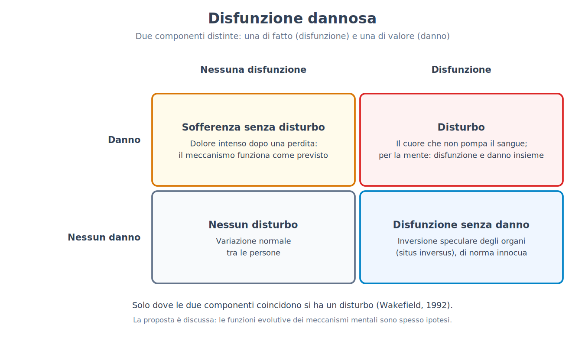
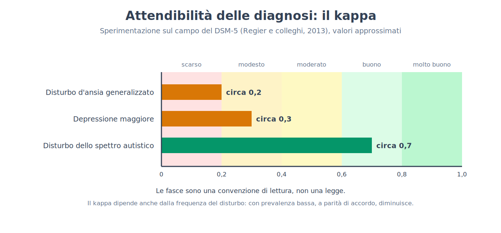
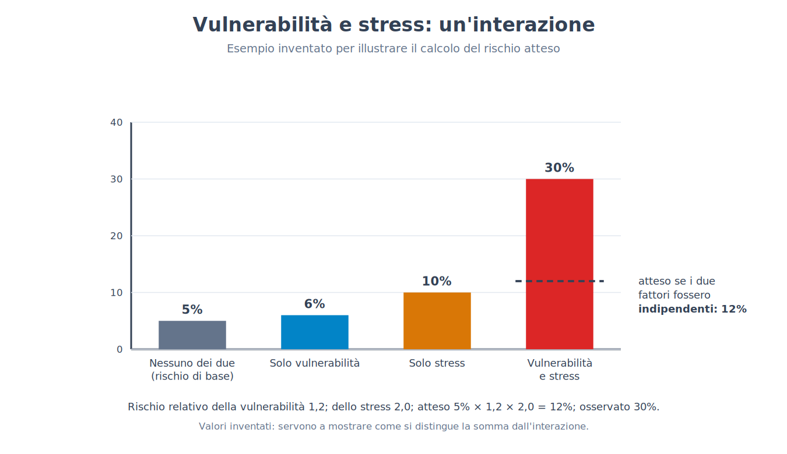
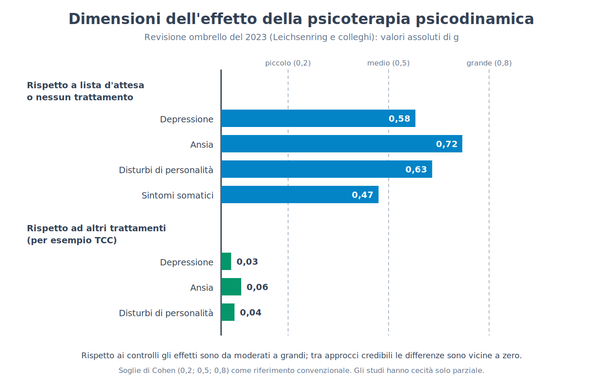
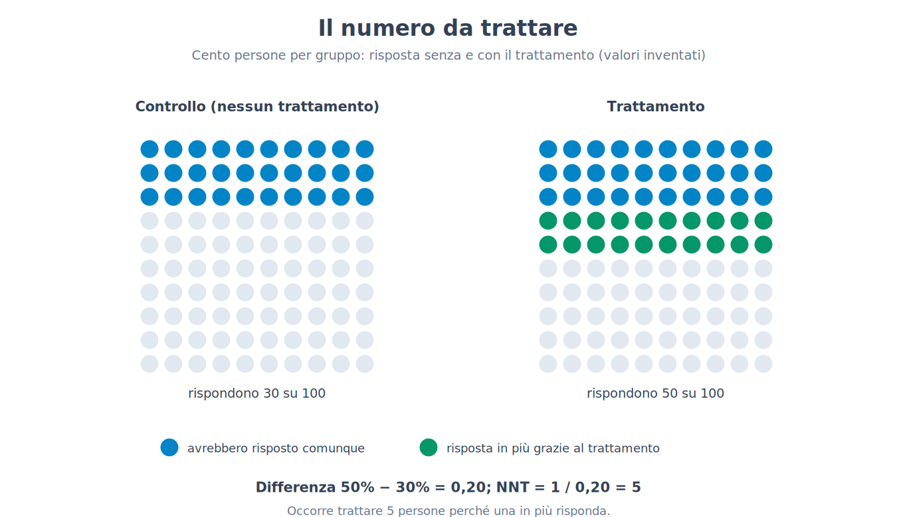
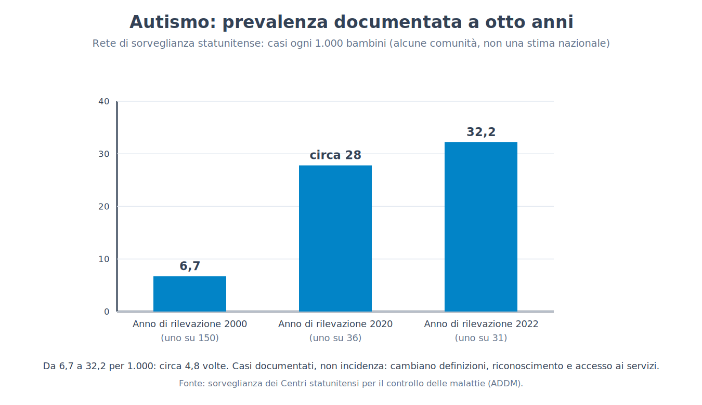

Parte XII. La sofferenza psichica come banco di prova
Capitolo 73 — Che cosa rende un disturbo un disturbo
[IN DUE PAROLE]
Una persona è molto triste da settimane dopo la morte del marito: ha un disturbo? Questo capitolo mostra che la risposta dipende da dove si traccia un confine, e che i quattro modi più comuni di tracciarlo (statistico, per sofferenza, per danno funzionale, per norma sociale) hanno ciascuno un difetto riconoscibile. Espone la definizione dell'associazione psichiatrica americana e la proposta della «disfunzione dannosa», ripercorre alcuni confini che si sono spostati e distingue due domande che nel linguaggio comune si confondono: che cosa è cambiato nelle conoscenze e che cosa è cambiato nei valori.
La parte precedente si è chiusa con le persone comuni, e con il modo in cui situazione, gruppo e autorità ne orientano il comportamento (72 → 73). La parte che comincia qui sposta lo sguardo su un ambito in cui la posta è più alta e i confini sono più discussi: la sofferenza psichica e il modo in cui la si classifica. Va detto subito che cosa questa parte non è. Non è un manuale dei disturbi, non descrive uno per uno i quadri clinici e non dice come scegliere o sospendere un trattamento: per queste decisioni servono un professionista e le informazioni sul caso concreto. È invece un banco di prova per il metodo del libro. Tutto ciò che nelle parti precedenti si è imparato sulle misure, sui gruppi di controllo, sulle correlazioni e sulle replicazioni qui viene messo alla prova su un terreno dove le parole pesano più che altrove, perché una diagnosi cambia ciò che una persona può chiedere, ciò che gli altri si aspettano da lei e ciò che lei pensa di sé.
Comincia con una domanda a cui non si risponde con un esperimento. Immagina due persone con gli stessi sintomi: dormono male, hanno perso l'appetito, piangono spesso, non riescono a concentrarsi. La prima ha perso il marito tre settimane fa. La seconda, senza alcun evento che sappia indicare, sta così da tre settimane. Per molti anni il manuale diagnostico più usato escludeva la prima dalla diagnosi di depressione maggiore: la tristezza era considerata una risposta comprensibile a una perdita, non un disturbo. Nel 2013, con la quinta edizione, l'esclusione fu tolta, e la discussione che ne seguì tra i clinici fu accesa. Chi voleva toglierla osservava che la sofferenza di chi ha perso una persona cara può essere grave e prolungata quanto quella di una depressione e che aspettarsi dal clinico un giudizio sulla «comprensibilità» del dolore è un'operazione difficile. Chi voleva tenerla temeva che si trasformasse in disturbo ciò che una persona sana prova davanti a un lutto. Entrambe le posizioni hanno un argomento, e nessuna si decide con un dato. Per capire perché, bisogna chiedersi che cosa intendiamo quando diciamo che qualcosa è un disturbo.
Quattro modi di tracciare il confine
La risposta più immediata è statistica: è un disturbo ciò che è raro, ciò che si discosta dalla maggioranza. Ha il pregio di essere misurabile e un difetto che si vede subito. Molte caratteristiche rare non sono disturbi: avere una memoria musicale eccezionale, o essere alti più di due metri, o aver imparato a leggere a tre anni. E molte condizioni frequenti sono malattie: le carie sono diffusissime e nessuno le considera normali. Il criterio statistico dice quanto una caratteristica sia insolita, non se sia un problema. Per quanto riguarda i disturbi mentali, vedremo tra poco che le stime di diffusione sono così alte da rendere il criterio ancora meno adatto.
La seconda risposta è la sofferenza: è un disturbo ciò che fa stare male. È il criterio più vicino all'esperienza di chi chiede aiuto, ma fallisce nei due sensi. Si soffre senza avere un disturbo: il dolore per un lutto, per un licenziamento, per una malattia di un figlio è intenso e rientra in ciò che ci aspettiamo da una vita umana. E si può avere un disturbo senza soffrire: nelle prime fasi di un episodio maniacale una persona può sentirsi bene, piena di energia e di idee, e mettere in atto scelte che le costeranno molto (spese, rapporti rotti, il posto di lavoro).
La terza è il danno funzionale, o disabilità: è un disturbo ciò che impedisce di lavorare, di studiare, di mantenere i rapporti. Il criterio è più oggettivo della sofferenza, ma dipende dal contesto. La stessa caratteristica può essere un impedimento in un ambiente e passare inosservata in un altro: una difficoltà di lettura pesa poco dove si legge poco e moltissimo dove la scuola obbligatoria la rende visibile a tutti. Ne segue che il danno funzionale misura anche l'ambiente, non solo la persona.
La quarta è la norma sociale: è un disturbo ciò che si discosta da come ci si aspetta che una persona si comporti. Questo criterio ha una storia imbarazzante, perché ha permesso di chiamare malattia il dissenso. Nel 1851 un medico americano propose il nome di «drapetomania» per designare la tendenza degli schiavi a fuggire, trattandola come un disturbo; la proposta non è mai entrata in un manuale diagnostico moderno, ma mostra fin dove può arrivare una definizione fondata sul giudizio della società dominante. In una scala diversa, nell'Unione Sovietica la diagnosi di «schizofrenia torpida» fu usata per ricoverare alcuni dissidenti politici. Per questo ogni definizione contemporanea tiene a precisare che il solo scostamento dalle norme non basta.
[CONVINZIONE DIFFUSA]
«Esiste una linea netta tra chi è normale e chi è malato.» L'immagine è comoda, ma nessuno dei quattro criteri la produce: ciascuno traccia una soglia lungo una scala continua (di rarità, di sofferenza, di danno, di scostamento dalle aspettative) e la posizione della soglia dipende da una scelta. Il resto del capitolo, e il successivo, servono a vedere come si sceglie e con quali conseguenze.
La definizione dell'associazione psichiatrica americana
La definizione oggi più citata è quella del DSM (Diagnostic and Statistical Manual of Mental Disorders), il manuale dell'associazione psichiatrica americana, giunto nel 2013 alla quinta edizione (con una revisione del testo nel 2022). Accanto a esso c'è l'ICD (International Classification of Diseases), la classificazione dell'Organizzazione mondiale della sanità, di cui l'undicesima edizione è entrata in uso nel 2022. Per il DSM-5, un disturbo mentale (mental disorder) è una sindrome caratterizzata da un'alterazione clinicamente significativa della cognizione, della regolazione delle emozioni o del comportamento, che riflette una disfunzione nei processi psicologici, biologici o evolutivi alla base del funzionamento mentale. Di norma è associato a sofferenza o a compromissione del funzionamento. La definizione aggiunge due esclusioni. Una risposta attesa o culturalmente accettata a un evento comune, come la morte di una persona cara, non è un disturbo. E un comportamento socialmente deviante (politico, religioso, sessuale), o un conflitto che riguarda soprattutto il rapporto tra la persona e la società, non è un disturbo a meno che sia la conseguenza di una disfunzione.
La definizione mette insieme più criteri, cioè sofferenza, danno funzionale e disfunzione, e li protegge con le due esclusioni dai difetti del criterio statistico e di quello sociale. Resta però una difficoltà di fondo: dice che c'è una disfunzione dei processi mentali, ma per la maggior parte dei disturbi non sappiamo quali processi siano in difetto, né quale sia il loro funzionamento normale. Il manuale stesso ammette, in sostanza, che nessuna definizione specifica confini precisi.
Un tentativo di rendere più rigorosa la nozione di disfunzione è quello di Jerome Wakefield (1992), che propose di definire un disturbo come una disfunzione dannosa (harmful dysfunction). La proposta ha due componenti. La prima è fattuale: un meccanismo mentale non svolge la funzione per cui si è formato nel corso dell'evoluzione. La seconda è di valore: il fallimento di quel meccanismo causa un danno, giudicato tale secondo i valori sociali. Il vantaggio è che le due componenti si separano e si possono discutere una alla volta, come si vede con un esempio dal corpo. Un cuore che non pompa il sangue è un caso in cui disfunzione e danno si presentano insieme, ed è una malattia. Un'inversione speculare degli organi interni (situs inversus), che di norma non causa alcun problema, è un caso di disfunzione senza danno: l'anatomia è inusuale, ma nessuno ne soffre. Sul versante opposto, la sofferenza intensa dopo una perdita è un danno senza disfunzione: il meccanismo emotivo sta facendo quello per cui è fatto, e per questo, secondo Wakefield, non è un disturbo.

[QUESTIONE CONTROVERSA]
La proposta ha trovato molti critici, e le obiezioni sono di tre tipi. La prima è che le funzioni evolutive dei meccanismi mentali non si conoscono con la precisione che servirebbe: dire che un meccanismo «non funziona come dovrebbe» presuppone di sapere che cosa fosse selezionato a fare, e per molte funzioni psicologiche le ricostruzioni sono ipotesi e non fatti. La seconda è che il giudizio di disfunzione può contenere valori senza dichiararli: se si considera «disfunzione» ciò che non serve ad adattarsi a un certo ambiente, si sta già dando un giudizio su quell'ambiente. La terza è pratica: un clinico deve decidere se offrire aiuto anche in casi in cui la distinzione tra danno e disfunzione non si lascia stabilire, e una definizione che non permette di decidere ha un valore limitato per la pratica. Chi difende la proposta replica che il criterio serve a ragionare sui confini, non a risolvere ogni caso, e che la separazione tra fatto e valore è utile proprio perché obbliga a dire quale delle due componenti è in discussione.
I confini si sono spostati
I confini dei manuali non sono rimasti fermi. Si possono osservare alcuni spostamenti e chiedersi, per ciascuno, che cosa sia cambiato.
| Caso | Che cosa è cambiato | Che cosa ha pesato |
|---|---|---|
| Omosessualità (1973–1990) | Il consiglio direttivo dell'associazione psichiatrica americana la tolse dal DSM-II nel 1973; una diagnosi legata al disagio per il proprio orientamento rimase nel DSM-III e fu eliminata come tale nel DSM-III-R (1987); l'OMS la tolse dall'ICD nel 1990 | Critiche interne ed esterne, confronto con i dati, mutamento delle norme sociali |
| Lutto (2013, 2022) | Il DSM-5 tolse l'esclusione del lutto dalla depressione maggiore; il DSM-5-TR introdusse un disturbo da lutto prolungato (dopo almeno dodici mesi nell'adulto, sei nell'ICD-11) | Dati sul decorso, dibattito sul rischio di medicalizzare, bisogno di servizi |
| Gioco d'azzardo (2013) | Il DSM-5 lo spostò dai disturbi del controllo degli impulsi ai disturbi da dipendenza; l'ICD-11 include anche un disturbo da gioco con videogiochi | Somiglianze con le dipendenze, discussione sulla soglia tra uso intenso e disturbo |
| Drapetomania (1851) e schizofrenia torpida (URSS) | Etichette usate per patologizzare la fuga o il dissenso; la prima mai accolta in una classificazione moderna | Norma sociale usata come criterio, uso politico delle diagnosi |
La tabella mostra che i confini si spostano per almeno tre ragioni distinte. A volte cambiano le conoscenze (dati sul decorso, sulle somiglianze tra condizioni). A volte cambiano i valori e le norme di una società (ciò che è tollerato, ciò che si considera un danno). E a volte contano esigenze pratiche, come l'accesso ai servizi, la copertura assicurativa, le necessità della ricerca o del diritto. Le tre ragioni si presentano di solito mescolate, e separarle caso per caso richiede un lavoro di ricostruzione storica. La rimozione dell'omosessualità dal DSM, in particolare, è un esempio in cui contarono insieme il confronto con i dati e la contestazione sociale, e ci ricorda che la scienza classificatoria non si svolge in un luogo separato dalla società.
[ATTENZIONE AL SALTO]
Dal fatto che i confini diagnostici si siano spostati nel tempo non segue che siano arbitrari, né che i disturbi siano «solo» costruzioni sociali. In medicina i confini si spostano di continuo senza che le malattie diventino invenzioni: nel 2017 le linee guida cardiologiche americane abbassarono la soglia di pressione arteriosa che definisce l'ipertensione di primo stadio a 130/80 mmHg, e la ragione fu che nuovi dati mostravano un rischio già elevato a valori più bassi. Una soglia si può spostare perché si sa di più sul rischio e sul beneficio di intervenire. Per i disturbi mentali la differenza sta nel fatto che spesso manca un indicatore misurabile indipendente dalla sindrome (come la pressione, o la glicemia), e dunque la soglia si regge soprattutto su giudizi clinici e sociali. È una difficoltà reale, ma non vuol dire che dietro la sofferenza non ci sia nulla da spiegare.
Quanto è esteso il confine
Per capire quanto contino queste scelte basta guardare quante persone rientrano nelle definizioni. La prevalenza (prevalence) è la proporzione di una popolazione che presenta una condizione in un dato periodo: la prevalenza «nell'ultimo anno» conta chi la presenta in quei dodici mesi, quella «nell'arco della vita» conta chi l'ha presentata almeno una volta. Le stime di prevalenza nell'arco della vita ottenute con interviste strutturate sono alte: negli Stati Uniti circa il 46% della popolazione soddisfa, in qualche momento, i criteri di almeno un disturbo, e in molti paesi le stime superano una persona su tre. Nello studio di Dunedin del capitolo 60, seguito fino a 38 anni, la stima pubblicata (Schaefer e colleghi, 2017) indica che la grande maggioranza dei partecipanti, oltre l'80%, aveva ricevuto almeno una diagnosi in qualche momento.
Come si leggono questi numeri? Ci sono almeno tre letture, e non si escludono. La prima è che la sofferenza psichica sia molto diffusa e che per anni sia stata sottostimata. La seconda è che le soglie siano così basse da includere anche una parte della normale variazione dell'esperienza umana: un episodio di due settimane a diciannove anni, passato e superato, conta nella stima «nell'arco della vita» tanto quanto un disturbo che dura da decenni. La terza è che il significato stesso dei concetti legati al danno si sia allargato nel tempo, un fenomeno che Nick Haslam (2016) ha chiamato concept creep. Va anche notato che la quota di casi gravi e persistenti è molto più piccola di quella complessiva: le percentuali alte contano soprattutto episodi lievi o transitori. Quale delle letture prevalga è una questione aperta, ed è una buona ragione per diffidare di chi cita queste percentuali per sostenere una sola delle tre.
Il confine, dunque, non può essere né ignorato né preso come un dato di natura. Sapere dove si trova richiede di sapere come è stata costruita la lista che lo traccia, e di chiedersi se le categorie di quella lista corrispondano a unità reali oppure a convenzioni utili (73 → 74). Un caso in cui la discussione sul confine ha investito una categoria intera, con la voce delle persone interessate, è quello dell'autismo (73 → 77).
[NUMERI]
• Stati Uniti: circa il 46% della popolazione soddisfa i criteri di almeno un disturbo nell'arco della vita; in molti paesi la stima supera una persona su tre.
• Dunedin (988 persone valutate a 38 anni): secondo la stima pubblicata, circa l'83% ha ricevuto almeno una diagnosi nell'arco di vita.
• Soglia dell'ipertensione di primo stadio: da 140/90 a 130/80 mmHg nelle linee guida americane del 2017 (esempio dalla medicina di confine spostato per nuovi dati).
• Lutto: esclusione eliminata nel DSM-5 (2013); disturbo da lutto prolungato introdotto nel DSM-5-TR (2022), dopo almeno dodici mesi nell'adulto.
[MINI-CRONOLOGIA]
• 1851: proposta della «drapetomania», mai entrata in una classificazione moderna.
• 1973: l'omosessualità è tolta dal DSM-II.
• 1980: il DSM-III introduce criteri diagnostici espliciti (capitolo 74).
• 1987: eliminata l'ultima diagnosi legata all'orientamento sessuale (DSM-III-R).
• 1990: l'OMS adotta l'ICD-10, senza l'omosessualità.
• 1992: Wakefield propone la «disfunzione dannosa».
• 2013: DSM-5, senza l'esclusione del lutto.
• 2022: DSM-5-TR e ICD-11.
[IL PUNTO CHIAVE DEL CAPITOLO]
• I quattro modi più comuni di tracciare il confine (raro, doloroso, invalidante, socialmente deviante) falliscono ciascuno in un modo riconoscibile: si può soffrire senza avere un disturbo e averne uno senza soffrire; ciò che è frequente può essere un problema e ciò che è raro può non esserlo.
• La definizione del DSM-5 combina sofferenza, compromissione e disfunzione dei processi mentali ed esclude le risposte attese a eventi comuni e il solo dissenso sociale; la sua debolezza è che per molti disturbi non sappiamo quale processo sia in disfunzione.
• La proposta della disfunzione dannosa (Wakefield, 1992) separa una componente di fatto (un meccanismo che non fa ciò per cui si è formato) e una di valore (il danno); è utile per ragionare e discussa nelle sue premesse evolutive.
• I confini si sono spostati per cambiamenti di conoscenza, di valori e di esigenze pratiche, mescolati tra loro; uno spostamento non rende arbitraria una categoria, come mostra l'ipertensione.
• Le stime di prevalenza nell'arco della vita sono molto alte (circa il 46% negli Stati Uniti), e si possono leggere come sofferenza sottostimata, soglie basse o allargamento dei concetti; non esiste ancora un modo per scegliere tra queste letture.
Capitolo 74 — Come si costruisce una classificazione
[IN DUE PAROLE]
Una diagnosi è un'etichetta che una classificazione assegna a una persona; vale quanto vale la classificazione. Questo capitolo espone come se ne misurano le due qualità fondamentali: l'attendibilità (due clinici arrivano alla stessa etichetta?) e la validità (l'etichetta corrisponde a qualcosa di reale?). Mostra con due calcoli che cosa significano un kappa basso e «duecentoventisette modi» di soddisfare la stessa categoria, presenta la comorbilità e il fattore p, e confronta i tre modi in cui oggi si propone di cambiare la lista (dimensioni, domini di funzione, reti di sintomi).
Il capitolo precedente ha mostrato che il confine tra ciò che è e ciò che non è un disturbo si può tracciare in più modi (73 → 74). Questo capitolo si occupa del passo successivo, meno visibile e altrettanto importante: una volta stabilito che esistono disturbi, come si costruisce l'elenco che li nomina? Un elenco di questo tipo serve a molte cose. Permette ai clinici di capirsi tra loro, ai ricercatori di studiare gruppi comparabili, ai servizi di decidere chi ha accesso a che cosa, e, almeno nelle intenzioni, aiuta a prevedere l'andamento di una condizione e a scegliere un intervento. Non tutte queste funzioni richiedono che le categorie corrispondano a unità presenti in natura. Come hanno sottolineato Robert Kendell e Assen Jablensky (2003), un elenco può essere utile anche se le sue categorie non sono valide in senso forte, così come una carta stradale è utile senza riprodurre ogni particolare del terreno. La distinzione tra utilità e validità è il filo di tutto il capitolo.
Per le due qualità useremo concetti già incontrati nel capitolo 3. L'attendibilità (la coerenza di una misura) si applica alla diagnosi nella forma dell'attendibilità tra valutatori (inter-rater reliability): se due clinici esaminano la stessa persona, indipendentemente, quanto spesso arrivano alla stessa etichetta? La validità (quanto una misura coglie ciò che dice di cogliere) si applica nella domanda: la categoria individua un gruppo di persone che ha qualcosa di vero in comune, oltre al fatto di essere stata nominata allo stesso modo?
Quando due clinici non si trovano d'accordo
Per decenni la risposta alla prima domanda è stata scomoda. Un esempio è il confronto tra gli ospedali di New York e di Londra condotto agli inizi degli anni Settanta (Cooper e colleghi, 1972): i ricoverati con un quadro simile ricevevano la diagnosi di schizofrenia molto più spesso a New York che a Londra, mentre a Londra venivano più spesso classificati come disturbi dell'umore. Quando un gruppo di ricerca applicò a entrambi gli ospedali la stessa intervista standardizzata e gli stessi criteri, la differenza si ridusse molto. Il risultato suggeriva che a differire non fossero i pazienti, ma le abitudini diagnostiche locali. Gli psichiatri di un gruppo dell'università di Washington a Saint Louis (Feighner e colleghi, 1972) proposero allora criteri espliciti per un numero limitato di disturbi, e questa strada portò alla terza edizione del DSM (1980), che abbandonò le descrizioni generali a favore di elenchi di criteri e di soglie. Da allora la lista diagnostica ha la forma che conosciamo, e proprio per questo è possibile contare quanto spesso due clinici si accordino.
Un episodio spesso citato in questa storia è lo studio di Rosenhan, che mostra bene sia la questione sia la prudenza con cui va trattata.
[IL DISEGNO DELL'ESPERIMENTO]
Nello studio di David Rosenhan (1973), pubblicato con il titolo «Essere sani in luoghi malati», otto persone senza storia di disturbi psichiatrici si presentarono a dodici ospedali in cinque stati americani dicendo di sentire voci dello stesso sesso che sembravano pronunciare parole come «vuoto», «cavo», «tonfo». Dopo il ricovero smisero di riferire sintomi e si comportarono normalmente. Furono tutti ricoverati: sette con diagnosi di schizofrenia, uno con diagnosi di psicosi maniaco-depressiva. Rimasero in ospedale da 7 a 52 giorni (in media 19), e furono dimessi con la diagnosi di schizofrenia «in remissione». Nessuno fu riconosciuto come impostore dal personale, mentre una parte dei pazienti ricoverati sospettava che fossero sani (35 su 118 nei primi tre ricoveri). In una seconda parte, un ospedale fu avvertito che nei tre mesi seguenti sarebbero arrivati dei falsi pazienti: il personale giudicò 41 dei 193 nuovi ricoverati probabili impostori e altri 42 sospetti, ma Rosenhan non aveva mandato nessuno. Conclusione dell'autore: in un ospedale psichiatrico le diagnosi non distinguono in modo affidabile i sani dai malati.
[REGGE ANCORA?]
Come dimostrazione, lo studio non regge. Robert Spitzer (1975) obiettò che le diagnosi dipendono in larga parte da ciò che il paziente riferisce, e che l'inganno non dice più sulla psichiatria di quanto direbbe su un medico un paziente che simulasse a voce un sintomo di cui nessun esame può accertare l'assenza; e che il personale aveva buone ragioni per non sospettare un inganno. Più grave è la ricostruzione fatta dalla giornalista Susannah Cahalan (2019), che esaminò le carte conservate dopo la morte dell'autore: trovò incongruenze tra i dati e il testo pubblicato, citazioni inesatte rispetto alle cartelle cliniche, riuscì a identificare soltanto due degli otto pseudopazienti e si chiese se gli altri sei esistessero. Altri studiosi hanno giudicato il quadro compatibile con una frode (Scull, 2023). Ciò che resta è la domanda che lo studio aveva posto, non la risposta: una diagnosi data in un ospedale, da un clinico che ha poche informazioni e poco tempo, quanto si può considerare un dato? Per rispondere servono misure dell'accordo, cioè esattamente ciò che segue.
Come si misura l'accordo
Se due clinici esaminano cento persone e danno la stessa risposta (disturbo presente o assente) in settantacinque casi, hanno un accordo del 75%. Ma un po' di quell'accordo si avrebbe anche tirando una moneta, e quanto ne conti dipende da quanto spesso si dice «sì». Il kappa di Cohen (Cohen's kappa) corregge l'accordo osservato per quello atteso per caso.
[FORMULA]
κ = (p₀ − pₑ) / (1 − pₑ)
Dove:
• κ (kappa) è l'indice di accordo, che vale 1 con accordo perfetto, 0 con un accordo pari a quello atteso per caso e valori negativi con un accordo inferiore al caso;
• p₀ è la proporzione osservata di casi in cui i due valutatori danno la stessa risposta;
• pₑ è la proporzione di accordo atteso per caso: la somma dei prodotti delle frequenze con cui ciascun valutatore ha dato quella risposta (la probabilità che entrambi dicano «sì» per caso, più la probabilità che entrambi dicano «no»);
• 1 − pₑ è l'accordo massimo possibile oltre il caso.
Esempio di calcolo. Su 100 persone, i due clinici dicono entrambi «sì» in 40 casi, entrambi «no» in 35, e discordano nei restanti 25 (il primo dice sì e il secondo no in 10, il contrario in 15). L'accordo osservato è p₀ = (40 + 35) / 100 = 0,75. Il primo clinico dice «sì» il 50% delle volte (40 + 10), il secondo il 55% (40 + 15), quindi pₑ = 0,50 × 0,55 + 0,50 × 0,45 = 0,275 + 0,225 = 0,50. Allora κ = (0,75 − 0,50) / (1 − 0,50) = 0,50. Un accordo osservato del 75% corrisponde a un kappa di 0,50, cioè a metà strada tra il caso e l'accordo perfetto.
Per leggere i valori si usa una convenzione, non una legge: sopra 0,8 l'accordo si considera molto buono, tra 0,6 e 0,8 buono, tra 0,4 e 0,6 moderato, tra 0,2 e 0,4 modesto, sotto 0,2 scarso. Nella sperimentazione sul campo del DSM-5, che precedette la pubblicazione del manuale nel 2013 (Regier e colleghi, 2013), clinici diversi valutarono gli stessi pazienti in momenti diversi in centri statunitensi e canadesi, e il kappa risultò buono per il disturbo dello spettro autistico (circa 0,7), ma molto più basso per la depressione maggiore (circa 0,3) e per il disturbo d'ansia generalizzato (circa 0,2). Il dato fu molto discusso. Chi lo leggeva come un fallimento della classificazione osservava che proprio le diagnosi più frequenti nella pratica erano tra le meno attendibili. Chi lo difendeva faceva notare che il disegno prevedeva due valutazioni in momenti diversi, quindi includeva anche i veri cambiamenti dei sintomi tra una visita e l'altra, e che nelle ricerche con interviste strutturate e clinici addestrati i valori sono di solito più alti.

[ATTENZIONE AL SALTO]
Un kappa basso non significa che i clinici sbaglino spesso: dipende anche da quanto è frequente il disturbo. Se la condizione riguarda il 5% delle persone e i due clinici sono d'accordo nel 95% dei casi, l'accordo atteso per caso è già molto alto (pₑ = 0,05 × 0,05 + 0,95 × 0,95 = 0,905), e κ = (0,95 − 0,905) / (1 − 0,905) ≈ 0,47. Lo stesso accordo del 95% darebbe κ = 0,90 se la condizione riguardasse metà delle persone (pₑ = 0,50). Il kappa è un buon indicatore per confrontare condizioni di frequenza simile, e va letto accanto alla percentuale di accordo e alla frequenza. Inoltre, un'alta attendibilità non prova la validità: due clinici possono essere d'accordo sempre su una categoria che non corrisponde a nulla di reale.
Che cosa vorrebbe dire che una categoria è valida
[CONVINZIONE DIFFUSA]
«Un disturbo psichiatrico si accerta come una frattura: c'è un esame che lo conferma.» Per la grande maggioranza dei disturbi mentali non esiste un esame di laboratorio o di immagini che stabilisca la diagnosi: si basa sul colloquio, sull'osservazione e sull'applicazione di criteri. Non è un caso isolato nella medicina (l'emicrania e molte forme di dolore cronico si diagnosticano allo stesso modo), ma ha una conseguenza: la validità non può essere verificata con un riscontro esterno e va costruita con altri argomenti.
La seconda qualità è più difficile da misurare. Nel 1970 Eli Robins e Samuel Guze proposero cinque criteri con cui dimostrare la validità di una diagnosi psichiatrica: una descrizione clinica precisa, studi di laboratorio che la distinguano, una delimitazione rispetto ad altri disturbi, studi di decorso nel tempo e studi sulle famiglie. L'idea è che una categoria valida si comporti come una malattia ben definita: abbia un quadro riconoscibile, un andamento prevedibile, una distribuzione familiare e, se possibile, un correlato biologico. Per pochissimi disturbi psichiatrici si dispone di tutti questi elementi, e quasi nessuna diagnosi ha un esame di laboratorio che la identifichi.
Kendell e Jablensky (2003) propongono un criterio più stretto per la validità in senso forte: una categoria è valida se esiste un «punto di rarità» tra essa e le categorie vicine, cioè se tra i casi tipici di un disturbo e quelli di un altro, o tra i casi e i non-casi, c'è un vuoto nella distribuzione delle persone. Se invece le persone si distribuiscono con continuità, lungo una scala di gravità, senza lacune, non esistono confini naturali, e le soglie sono convenzioni. L'analisi tassometrica (taxometric analysis) è un insieme di metodi statistici che chiede proprio questo: i punteggi si dispongono in due gruppi separati, o su un continuo? Una rassegna di molti di questi studi (Haslam e colleghi, 2012) ha concluso che per la maggior parte dei costrutti psicopatologici esaminati la struttura risultava dimensionale, non a gruppi. Ne segue una conseguenza pratica: se la struttura è continua, la domanda «quanto depresso?» ha più senso di «depresso sì o no?», e una soglia è un modo di decidere dove intervenire, non il limite di una specie.
Una categoria, duecentoventisette modi di soddisfarla
Un secondo problema riguarda l'omogeneità. Per la diagnosi di episodio depressivo maggiore, il DSM-5 richiede cinque criteri su nove, tra cui almeno uno di due (umore depresso, o perdita di interesse o piacere); i nove includono alterazioni del sonno, dell'appetito, della concentrazione, della stanchezza, del senso di colpa, dell'attività motoria e pensieri di morte. Quante combinazioni diverse soddisfano la regola? Si contano le scelte di almeno cinque criteri su nove, e si tolgono quelle che non includono nessuno dei due criteri principali.
[FORMULA]
N = Σ(k = 5…9) C(9, k) − Σ(k = 5…7) C(7, k)
Dove:
• N è il numero di combinazioni di criteri che soddisfano la regola;
• C(n, k) (coefficiente binomiale) è il numero di modi di scegliere k elementi tra n senza considerare l'ordine, uguale al prodotto n × (n − 1) × … × (n − k + 1) diviso il prodotto k × (k − 1) × … × 1 (per esempio C(9, 5) = (9 × 8 × 7 × 6 × 5) / (5 × 4 × 3 × 2 × 1) = 126);
• la prima somma conta i modi di scegliere da cinque a nove criteri tra i nove disponibili;
• la seconda somma conta i modi di scegliere da cinque a sette criteri tra i soli sette che non sono i due principali: sono le combinazioni da escludere, perché non contengono né l'umore depresso né la perdita di interesse.
Esempio di calcolo. Prima somma: C(9,5) + C(9,6) + C(9,7) + C(9,8) + C(9,9) = 126 + 84 + 36 + 9 + 1 = 256. Seconda somma: C(7,5) + C(7,6) + C(7,7) = 21 + 7 + 1 = 29. Quindi N = 256 − 29 = 227. Considerando che alcuni criteri sono doppi (insonnia o ipersonnia, agitazione o rallentamento), le combinazioni distinte sono ancora di più.
La conseguenza è che, stando alla lista dei nove criteri, due persone con la stessa diagnosi possono avere in comune un solo criterio. Non è un'astrazione. Eiko Fried e Randolph Nesse (2015) hanno esaminato i sintomi di 3.703 pazienti con depressione maggiore entrati in un grande studio di trattamento (lo studio STAR*D del capitolo 22), e ne hanno contati 1.030 profili diversi di sintomi. Il risultato non dimostra che la depressione non esista, ma indica che l'etichetta raggruppa quadri molto diversi tra loro, e ciò può contribuire a spiegare perché per i trattamenti e per le cause biologiche si trovi spesso un'efficacia media modesta, con ampie differenze tra individui (capitolo 22).
Comorbilità: una persona, più etichette
Un terzo problema è la comorbilità (comorbidity): la presenza, nella stessa persona, di più di una diagnosi. Nelle indagini sulla popolazione e nella clinica, una quota consistente delle persone con una diagnosi ne ha anche altre. Se le categorie corrispondessero a malattie distinte, una comorbilità così alta sarebbe sorprendente. Le spiegazioni proposte sono almeno quattro, e si escludono solo in parte. I criteri si sovrappongono: la difficoltà di concentrazione o i disturbi del sonno compaiono in molte liste, e due diagnosi possono condividere elementi. Possono esserci fattori di rischio comuni, genetici o ambientali (74 → 75). La classificazione può suddividere troppo finemente un continuo. Infine, un disturbo può causare un altro.
Un modo di leggere la comorbilità è cercare la struttura che sta sotto le etichette. Nello studio di Dunedin (il capitolo 60), Avshalom Caspi e colleghi (2014) hanno analizzato statisticamente le diagnosi dei partecipanti seguiti dai 18 ai 38 anni. Il modello che meglio descriveva i dati comprendeva tre dimensioni (internalizzazione: depressione e ansia; esternalizzazione: comportamenti antisociali e uso di sostanze; disturbo del pensiero: sintomi psicotici) e, sopra di esse, un fattore generale che gli autori chiamarono fattore p (p factor). Punteggi più alti sul fattore p si associavano a maggiore compromissione della vita, a più disturbi in famiglia, a una storia dello sviluppo più difficile e a una peggiore funzione cerebrale precoce. L'analogia con il fattore g dell'intelligenza (capitolo 64) è deliberata: come la molteplicità positiva delle prove cognitive, le diagnosi correlano positivamente tra loro. E vale la stessa cautela di allora: un fattore statistico riassume una correlazione, non dimostra una causa unica. Il fattore p potrebbe riflettere una vulnerabilità comune, ma anche elementi condivisi tra le misure o la sovrapposizione dei criteri, e la ricerca è in corso.
Tre proposte per cambiare la lista
Davanti a questi problemi sono state proposte alternative. Non si escludono, e ciascuna risponde a una difficoltà diversa.
La prima è dimensionale. La tassonomia gerarchica della psicopatologia (HiTOP, Hierarchical Taxonomy of Psychopathology; Kotov e colleghi, 2017) organizza i sintomi in dimensioni continue, raggruppate in sottofattori e poi in spettri più ampi (come l'internalizzazione e l'esternalizzazione), in base a come i sintomi variano insieme nelle popolazioni. Non produce diagnosi sì/no, ma profili; è più fedele alla struttura statistica dei dati, e meno semplice da usare nei servizi, dove spesso occorre decidere se una persona rientra o no in un percorso.
La seconda parte dalla funzione, non dai sintomi. Il programma statunitense dei criteri di dominio della ricerca (RDoC, Research Domain Criteria; avviato dall'istituto nazionale di salute mentale a partire dal 2009-2010) propone alla ricerca di studiare domini di funzionamento (per esempio il sistema della paura, della ricompensa, i processi cognitivi, i processi sociali) a più livelli, dai geni al comportamento, indipendentemente dalle categorie diagnostiche. La scommessa è che i meccanismi, una volta compresi, ridisegneranno le categorie. Le critiche sono che il quadro, per ora, ha prodotto più una griglia per organizzare gli studi che nuovi trattamenti, e che trascura parte dell'esperienza clinica.
La terza è l'approccio a reti (network approach; Borsboom e Cramer, 2013): un disturbo non è la manifestazione di una causa comune, come un'infezione che provoca i sintomi, ma un insieme di sintomi che si rafforzano a vicenda (un'insonnia produce stanchezza, la stanchezza rende difficile concentrarsi, il fallimento nel concentrarsi produce preoccupazione, e così via), per cui il disturbo coincide con una rete che si mantiene stabile. Ha il pregio di spostare l'attenzione sui sintomi e sulle loro relazioni. Va ricordato che le reti stimate con dati raccolti una volta sola mostrano associazioni, non nessi causali: per sostenere che un sintomo ne causa un altro servono studi nel tempo o interventi, secondo i criteri del capitolo 4.
[QUESTIONE CONTROVERSA]
Il dibattito tra categorie e dimensioni non è soltanto accademico. Chi difende le categorie osserva che in clinica e nei servizi si deve comunque decidere (trattare o non trattare, ricoverare o seguire a casa), e che le etichette sono un linguaggio comune e hanno spesso un valore pratico anche quando non sono valide in senso forte. Chi preferisce le dimensioni osserva che le categorie danno l'impressione di confini che non esistono, e fanno perdere informazione su chi sta appena sotto la soglia. La posizione più diffusa, oggi, è che le soglie servano a decidere e non a scoprire, e che le due prospettive possano convivere (per esempio con spettri in ricerca e categorie in clinica). Ma un punto resta aperto: se i meccanismi biologici dei disturbi corrispondano a categorie, a dimensioni o ad altro, non lo sappiamo ancora.
Costrutti, etichette e il rischio di scambiare le une per cose
Tutto questo ricorda quanto detto nel capitolo 3 sui costrutti: la «depressione» è un costrutto, cioè un concetto introdotto per organizzare osservazioni, non qualcosa che si trovi dentro la testa come un oggetto. La reificazione (reification) è l'errore di trattare un costrutto come una cosa: dire che una persona «ha la depressione» come se avesse un virus, e cercare la lesione corrispondente. Non significa che i costrutti siano inutili (la temperatura e l'intelligenza sono costrutti), ma che la domanda se corrispondano a entità distinte va posta, e non si risolve dando loro un nome.
C'è una seconda differenza, che distingue le categorie delle persone da quelle delle cose. Il filosofo Ian Hacking (1995) ha chiamato effetto ciclico (looping effect) il fatto che classificare le persone cambia le persone classificate: chi riceve un'etichetta può riconoscersi, cambiare ciò che si aspetta da sé, cercare altre persone con la stessa etichetta o rifiutarla, e il modo in cui le persone si comportano rimodella a sua volta la categoria. Un minerale non reagisce all'essere classificato; una persona sì. Ne segue che una categoria diagnostica è un bersaglio in movimento, e che non è sempre possibile separare il tracciato della categoria dalla storia delle persone che vi sono state collocate (74 → 77).
[NUMERI]
• Rosenhan (1973): 8 pseudopazienti, 12 ospedali, 7–52 giorni di ricovero (media 19); seconda parte: 193 pazienti valutati, 41 giudicati impostori, 42 sospetti, nessun falso paziente inviato. Dati messi in dubbio da Cahalan (2019).
• Sperimentazione sul campo del DSM-5 (2013): kappa circa 0,7 per lo spettro autistico, circa 0,3 per la depressione maggiore, circa 0,2 per il disturbo d'ansia generalizzato.
• Kappa dell'esempio: accordo 75%, κ = 0,50; con prevalenza del 5% e accordo 95%, κ ≈ 0,47.
• Depressione maggiore: 227 combinazioni di criteri soddisfano la regola «cinque su nove, di cui uno dei due principali»; in 3.703 pazienti, 1.030 profili di sintomi diversi (Fried e Nesse, 2015).
[MINI-CRONOLOGIA]
• 1970: Robins e Guze propongono cinque criteri di validazione.
• 1972: confronto New York-Londra (Cooper e colleghi); criteri di Feighner.
• 1973: studio di Rosenhan.
• 1980: DSM-III e i criteri diagnostici espliciti.
• 1995: Hacking descrive l'effetto ciclico.
• 2003: Kendell e Jablensky distinguono validità e utilità.
• 2013: DSM-5 e sperimentazione sul campo; Borsboom e Cramer propongono l'approccio a reti.
• 2014: Caspi e colleghi, fattore p.
• 2017: HiTOP.
[IL PUNTO CHIAVE DEL CAPITOLO]
• Una classificazione può essere utile senza essere valida in senso forte; le due qualità si misurano in modi diversi e vanno tenute separate (Kendell e Jablensky, 2003).
• L'attendibilità tra valutatori si misura con il kappa, che corregge l'accordo per il caso: con accordo del 75% e frequenze del 50% e 55%, κ = 0,50; nelle prove sul campo del DSM-5 il kappa fu circa 0,7 per l'autismo, circa 0,3 per la depressione maggiore e circa 0,2 per l'ansia generalizzata.
• Il kappa dipende anche dalla frequenza del disturbo: a parità di accordo (95%) può valere 0,47 con prevalenza del 5% e 0,90 con prevalenza del 50%.
• La depressione maggiore si può diagnosticare in 227 combinazioni di criteri e nei dati reali compaiono più di mille profili diversi: la stessa etichetta raggruppa quadri molto eterogenei.
• La comorbilità alta e il fattore p (Caspi e colleghi, 2014) fanno pensare a una struttura sottostante più continua e generale delle categorie; il fattore p è un riassunto statistico, non una causa dimostrata.
• HiTOP (dimensioni), RDoC (domini di funzione) e reti di sintomi sono tre proposte di riforma che rispondono a problemi diversi; nessuna ha sostituito la lista.
• Classificare persone differisce dal classificare cose: l'etichetta cambia chi la riceve e le categorie cambiano nel tempo (effetto ciclico).
Capitolo 75 — Modelli esplicativi
[IN DUE PAROLE]
Perché una persona sviluppa un disturbo e un'altra, cresciuta nelle stesse condizioni, no? Le risposte stanno a livelli diversi (geni, esperienze, pensieri, cervello, contesto) e nessuno ha, per ora, un diritto di priorità. Questo capitolo espone il modello vulnerabilità-stress con il caso istruttivo del gene del trasportatore della serotonina, i modelli cognitivi, i modelli biologici con ciò che hanno trovato gli studi genetici sull'intero genoma, e mostra perché «a quale livello va cercata la spiegazione» sia una domanda ancora aperta.
Due fratelli crescono nella stessa casa, con gli stessi genitori, nello stesso quartiere. A venticinque anni uno attraversa un episodio depressivo grave e l'altro no. Quando si chiede «perché?», le risposte possibili si dispongono su livelli diversi: i geni, che i fratelli condividono solo in parte; le esperienze, che non sono mai identiche nemmeno nella stessa famiglia; il modo di pensare a ciò che accade; il funzionamento del cervello; il contesto sociale di quel momento. Ciascuna risposta ha dietro di sé una tradizione di ricerca e un modo di studiare il problema, e ciascuna, presa da sola, spiega solo una parte. Il capitolo precedente ha mostrato quanto siano incerte le categorie che si cerca di spiegare (74 → 75); questo capitolo mostra quanto sia incerto, a sua volta, il passo successivo.
Che cosa significa spiegare un disturbo
Conviene precisare tre parole che nel linguaggio comune si scambiano. Un fattore di rischio è una caratteristica associata a una maggiore probabilità di un disturbo: dice che le due cose vanno insieme, non che una causi l'altra, e vale per esso tutto ciò che il capitolo 4 ha detto sulle correlazioni e sulle variabili confondenti. Una causa è qualcosa che, se cambiata, cambia la probabilità del disturbo: per dimostrarla servono disegni che permettano di intervenire, o almeno di escludere le spiegazioni alternative. Un meccanismo è la catena di processi che collega la causa all'effetto. Molte «spiegazioni» dei disturbi si fermano al primo gradino (c'è un'associazione) e sono presentate come se fossero arrivate al terzo.
Due concetti aiutano a ordinare quello che si trova. L'equifinalità (equifinality) indica che lo stesso esito può essere raggiunto per strade diverse: due persone con depressione possono esserci arrivate da percorsi che hanno poco in comune. La multifinalità (multifinality) indica il contrario: lo stesso punto di partenza può portare a esiti diversi. Un'infanzia di maltrattamenti, per esempio, è associata a più disturbi diversi (depressione, abuso di sostanze, comportamento antisociale), e molti bambini maltrattati non sviluppano nessuno dei tre (Cicchetti e Rogosch, 1996). Se equifinalità e multifinalità sono la regola, cercare «la causa» di un disturbo ha poco senso, e la domanda appropriata riguarda le probabilità e i percorsi.
Vulnerabilità e stress
Il modello più diffuso per combinare fattori di tipo diverso è quello della vulnerabilità e dello stress (diathesis–stress model). Fu formulato per la schizofrenia da Joseph Zubin e Bonnie Spring (1977): ogni persona ha un grado di vulnerabilità (la diatesi, cioè la predisposizione, di origine genetica, precoce o acquisita), e gli eventi stressanti spingono verso la soglia oltre la quale il disturbo compare. Con poca vulnerabilità serve molto stress; con molta vulnerabilità ne basta poco. Il modello ha il merito di dire una cosa più precisa di «conta sia la natura sia l'ambiente»: gli effetti possono non limitarsi a sommarsi, e interagire. Si può controllare con un conto.
[FORMULA]
Rischio relativo: RR = R_esposti / R_non esposti
Rischio atteso con due fattori indipendenti: R_atteso = R₀ × RR_A × RR_B
Dove:
• R_esposti e R_non esposti sono le proporzioni di persone che sviluppano il disturbo tra chi ha il fattore e chi non lo ha;
• RR (rischio relativo) dice di quante volte il fattore moltiplica il rischio (vale 1 se non lo cambia);
• R₀ è il rischio di chi non ha nessuno dei due fattori;
• RR_A e RR_B sono i rischi relativi dei due fattori valutati da soli;
• R_atteso è il rischio che si osserverebbe per chi ha entrambi se i due fattori agissero in modo indipendente, moltiplicando ciascuno per conto suo.
Esempio di calcolo (valori inventati per illustrare). Il rischio di chi non ha né vulnerabilità né stress è R₀ = 5%. Con la sola vulnerabilità è 6% (RR_A = 6 / 5 = 1,2), con il solo stress 10% (RR_B = 10 / 5 = 2,0). Se agissero in modo indipendente, chi ha entrambi avrebbe R_atteso = 5% × 1,2 × 2,0 = 12%. Se nei dati si osserva 30%, la combinazione pesa molto più della somma delle parti: c'è un'interazione. Lo stesso vale con un calcolo additivo (5% + 1 punto + 5 punti = 11%, contro il 30% osservato). La domanda empirica è sempre se i dati reali mostrino una discrepanza di questo tipo e se sia replicabile.

Il caso più studiato di interazione di questo tipo è anche il più istruttivo, perché mostra che cosa succede quando un'idea attraente incontra la replicazione.
[IL DISEGNO DELL'ESPERIMENTO]
Nello studio di Avshalom Caspi e colleghi (2003) si usarono i dati della coorte di Dunedin (capitolo 60): per 847 partecipanti si determinò una variante del gene che regola il trasportatore della serotonina (la regione detta 5-HTTLPR, che esiste in una forma «corta» e in una «lunga»), si contarono gli eventi di vita stressanti nel periodo dai 21 ai 26 anni e si valutò la depressione a 26 anni. Il risultato, pubblicato su Science, fu che l'effetto degli eventi stressanti sulla depressione era più forte nelle persone con la forma corta del gene, e quasi assente in quelle con due copie della forma lunga. Lo studio diventò il simbolo di una nuova stagione, quella delle interazioni gene-ambiente, e fu citato per anni come prova diretta del modello vulnerabilità-stress.
[REGGE ANCORA?]
L'interazione non ha retto alla verifica. Due meta-analisi del 2009 (tra cui quella di Risch e colleghi) non trovarono un effetto complessivo del genotipo sull'effetto dello stress, e un'analisi collaborativa più ampia (Culverhouse e colleghi, 2018) non trovò evidenza di un'interazione forte. Uno studio successivo che ha messo alla prova diciotto tra i geni candidati più studiati della depressione, in campioni da decine a centinaia di migliaia di persone (Border e colleghi, 2019), non ha trovato sostegno per queste ipotesi. Il modello generale (vulnerabilità e stress interagiscono) resta plausibile e sostenuto da altri tipi di studi, ma questo esempio specifico, un singolo gene con un forte effetto di interazione, non è confermato. Gli ingredienti del fallimento sono quelli del capitolo 5: campioni piccoli per effetti che, se esistono, sono piccoli; analisi con molti gradi di libertà; la tendenza a pubblicare i risultati positivi. Per l'interazione tra il gene MAOA e il maltrattamento del capitolo 27 il quadro è più incerto che negativo: le meta-analisi successive hanno dato risultati eterogenei, e il risultato originale non è né confermato in modo netto né smentito.
Modelli cognitivi
Un secondo livello di spiegazione è nel modo in cui le persone interpretano ciò che accade. Aaron Beck (1967, 1976) propose per la depressione un modello in cui la condizione è mantenuta da schemi, cioè da convinzioni stabili e negative, che producono pensieri automatici in risposta agli eventi. Il suo nucleo è la triade cognitiva negativa (negative cognitive triad): una visione negativa di sé, del mondo e del futuro. Davanti a un esame andato male, una persona con questi schemi pensa «non valgo niente, andrà sempre così», e non «ho sbagliato a prepararmi». L'idea si collega a ciò che il capitolo 53 ha detto sull'impotenza appresa: nella riformulazione di Abramson, Seligman e Teasdale (1978) conta come la persona spiega gli eventi negativi (con cause stabili, globali e interne), non solo se ha o non ha il controllo. Per i disturbi d'ansia, il modello di David Clark (1986) per il panico sostiene che le sensazioni corporee (un battito accelerato) vengano interpretate in modo catastrofico (un infarto), e che questa interpretazione le accentui.
Che cosa dicono i dati? Le persone con depressione mostrano in media pensieri più negativi e un'attenzione e una memoria orientate verso il materiale negativo; ma questo non basta a dimostrare che i pensieri causino la depressione, perché possono essere uno dei suoi sintomi. La questione causale si può affrontare con studi che seguono nel tempo persone ancora non depresse (alcuni mostrano che gli atteggiamenti negativi predicono episodi successivi, con effetti di solito moderati) e con gli studi sull'efficacia delle terapie che agiscono sui pensieri (capitolo 76). Se i pensieri negativi tornassero normali dopo la guarigione, sarebbero conseguenze della depressione e non cause; se persistessero, potrebbero essere una vulnerabilità. I risultati sono misti.
Un esempio di come un'idea cognitiva attraente possa essere ridimensionata è il realismo depressivo (depressive realism). Nel 1979 Lauren Alloy e Lyn Abramson osservarono che, in un compito in cui i partecipanti dovevano giudicare quanto controllo avessero sull'accensione di una luce, le persone depresse stimavano il proprio controllo in modo più accurato di quelle non depresse, che tendevano a sovrastimarlo. Fu riassunto nella formula «più tristi ma più saggi». Una meta-analisi di studi successivi (Moore e Fresco, 2012) ha trovato un effetto molto piccolo, e dipendente dal tipo di compito: l'immagine di una depressione come visione lucida della realtà non è sostenuta.
Modelli biologici
Il terzo livello è biologico, e ne conosciamo già un frammento: l'ipotesi monoaminergica, che il capitolo 22 ha mostrato non sostenuta nella sua forma semplice, pur restando efficaci alcuni farmaci che agiscono su quei sistemi. Qui interessano soprattutto la genetica e le differenze cerebrali, per ciò che mostrano e per ciò che non permettono di concludere.
Gli studi su gemelli e famiglie (capitolo 27) indicano che i disturbi psichiatrici hanno una componente ereditaria sostanziale e molto variabile: dell'ordine del 40% per la depressione maggiore, e molto più alta per la schizofrenia, con stime intorno all'80%. Valgono le cautele del capitolo 27: l'ereditabilità è una proprietà di una popolazione in un ambiente, non un destino individuale, e dipende dalle assunzioni del disegno. E non dice quali geni siano coinvolti. Per saperlo si è passati dai geni candidati scelti in base a un'ipotesi (la stagione del 5-HTTLPR) agli studi di associazione sull'intero genoma (genome-wide association studies, GWAS), che confrontano centinaia di migliaia di varianti genetiche in decine o centinaia di migliaia di persone, con e senza il disturbo, senza ipotesi di partenza. I risultati hanno cambiato il quadro. Per la schizofrenia, il consorzio internazionale dei geni psichiatrici ha identificato 108 regioni del genoma associate al disturbo nel 2014 e 287 nel 2022; per molti altri disturbi si sono trovate decine di regioni. Il quadro generale è poligenico: migliaia di varianti, ciascuna con un effetto piccolo, la cui somma pesa. Si può sommare l'effetto delle varianti di una persona in un punteggio poligenico (polygenic score), che spiega una quota modesta della variazione del rischio e non basta a predire la comparsa del disturbo in un individuo. Inoltre funziona meglio nelle popolazioni di origine europea, su cui è stato calcolato, che in altre. Gli stessi studi mostrano una sovrapposizione genetica sostanziale tra molti disturbi, e questo è coerente con la comorbilità e con il fattore p del capitolo precedente.
Per le differenze nel cervello valgono le cautele del capitolo 24. I grandi consorzi che mettono insieme migliaia di scansioni trovano, tra persone con e senza un disturbo, differenze medie nel volume di alcune strutture, ma piccole rispetto alla variazione tra persone: per il volume dell'ippocampo, ad esempio, differenze di circa 0,14 deviazioni standard nella depressione maggiore e di circa 0,46 nella schizofrenia (Schmaal e colleghi, 2016; van Erp e colleghi, 2016). Con una differenza di 0,14 deviazioni standard, le due distribuzioni si sovrappongono quasi del tutto: sapere il volume dell'ippocampo di una persona non permette di dire se abbia o no il disturbo. Una differenza media di gruppo può essere reale e non servire come test.
[CONVINZIONE DIFFUSA]
«Se un disturbo è genetico non si può fare nulla; se è psicologico dipende dalla volontà.» Il capitolo 27 ha già chiarito perché la prima metà sia falsa (l'ereditabilità è una statistica di popolazione e non un destino individuale) e il capitolo 76 mostrerà con dati quanto la seconda lo sia. Le due frasi condividono l'idea che esistano cause «di natura» e cause «di volontà». I modelli di questo capitolo dicono il contrario: tutte e due le serie di fattori agiscono insieme, e nessuna delle due toglie alla persona la possibilità di essere aiutata.
Quale livello è quello giusto
Ognuno dei livelli è stato proposto come il livello della spiegazione, e ciascun livello spiega bene ciò che i suoi metodi sanno vedere. Nel 1977 George Engel propose il modello biopsicosociale (biopsychosocial model), secondo cui la salute e la malattia dipendono insieme da fattori biologici, psicologici e sociali, in opposizione a un modello medico puramente biologico. Ha avuto un enorme successo come principio guida. Ha avuto anche critiche: Nassir Ghaemi (2009) ha osservato che, preso alla lettera, si riduce a un elenco («tutto conta») e non dice come i livelli interagiscano né a quale convenga rivolgersi.
Una risposta più elaborata è il pluralismo esplicativo (explanatory pluralism) di Kenneth Kendler (2012): per i disturbi psichiatrici nessun livello ha un primato, ciascuno coglie meccanismi reali, e il lavoro scientifico consiste nel collegarli, non nel ridurre gli uni agli altri. Un criterio utile per scegliere è quello degli interventi: un livello è appropriato, per una certa domanda, se intervenendo a quel livello cambia l'esito. Chi vuole prevenire può cercare di intervenire sul contesto sociale; chi vuole trattare un episodio può usare un farmaco o una terapia; chi vuole comprendere i meccanismi studierà il cervello. Domande diverse portano a livelli diversi, senza che nessuno di essi sia «più vero».
[ATTENZIONE AL SALTO]
Il fatto che un trattamento funzioni a un livello non identifica il livello della causa. Se una psicoterapia che modifica i pensieri migliora la depressione, non ne segue che la depressione sia «causata» da pensieri; se un farmaco migliora i sintomi, non ne segue che esista una carenza chimica (capitolo 22); e se la terapia o il farmaco non funzionano, non ne segue che il livello sia irrilevante. Anche il salto dall'ereditabilità al determinismo e quello dalle differenze cerebrali di gruppo a un test diagnostico non sono giustificati dai dati. Per sostenere un nesso causale servono disegni che intervengano sul fattore e mostrino un cambiamento dell'esito, secondo i criteri dei capitoli 2 e 4.
[QUESTIONE CONTROVERSA]
La domanda se i disturbi psichiatrici siano «malattie del cervello» divide i ricercatori. Chi risponde di sì (una posizione spesso associata ai programmi di ricerca biologici, come gli RDoC del capitolo 74) osserva che ogni esperienza e ogni pensiero hanno un correlato cerebrale, e che per capire i disturbi occorre studiare i circuiti. Chi risponde di no, o non solo, osserva che dire che un fenomeno ha un correlato cerebrale non lo spiega, che molti fattori decisivi (povertà, violenza, isolamento) agiscono a livello sociale, e che una lettura puramente neurobiologica rischia di far dimenticare la persona e il contesto. Una parte consistente degli studiosi propone un terzo atteggiamento: il livello dipende dalla domanda (prevenire, curare, capire), e la maturità di un campo si misura dalla capacità di collegare i livelli tra loro, non dalla vittoria di uno.
Nessuna di queste posizioni toglie valore a ciò che le terapie sanno fare. Se l'efficacia a un livello non identifica la causa, resta da stabilire che cosa funzioni, per chi, e come lo si possa sapere senza scambiare un miglioramento per un effetto del trattamento (75 → 76).
[NUMERI]
• Caspi e colleghi (2003): 847 partecipanti della coorte di Dunedin; variante corta o lunga del gene 5-HTTLPR; eventi stressanti tra i 21 e i 26 anni; depressione a 26 anni. Interazione non replicata.
• Ereditabilità stimata nei gemelli: dell'ordine del 40% per la depressione maggiore; intorno all'80% per la schizofrenia.
• Schizofrenia, studi sull'intero genoma: 108 regioni nel 2014; 287 nel 2022.
• Ippocampo: differenze medie di circa 0,14 (depressione maggiore) e 0,46 (schizofrenia) deviazioni standard.
• Esempio di interazione (valori inventati): rischio di base 5%, con vulnerabilità 6%, con stress 10%, con entrambi 30% (atteso 12%).
[MINI-CRONOLOGIA]
• 1967-1976: Beck, modello cognitivo della depressione.
• 1977: Zubin e Spring (vulnerabilità-stress); Engel (modello biopsicosociale).
• 1978: riformulazione attributiva dell'impotenza appresa.
• 1979: realismo depressivo (Alloy e Abramson).
• 2003: Caspi e colleghi, gene 5-HTTLPR e stress.
• 2009: prime meta-analisi senza conferma dell'interazione.
• 2012: Kendler, pluralismo esplicativo.
• 2014 e 2022: grandi studi sull'intero genoma della schizofrenia.
[IL PUNTO CHIAVE DEL CAPITOLO]
• Fattore di rischio, causa e meccanismo sono gradini distinti: molte spiegazioni si fermano al primo. Equifinalità e multifinalità rendono poco sensata la ricerca di «la» causa di un disturbo.
• Il modello vulnerabilità-stress prevede che i fattori interagiscano; si può verificare confrontando il rischio osservato con quello atteso se agissero in modo indipendente (nell'esempio inventato: 30% contro 12%).
• L'interazione tra il gene 5-HTTLPR e lo stress (Caspi e colleghi, 2003) non ha retto alle meta-analisi e agli studi più ampi: il caso mostra i rischi di campioni piccoli, di analisi flessibili e di pubblicazione selettiva.
• I modelli cognitivi (Beck) spiegano come si mantiene un disturbo e guidano le terapie, ma non dimostrano che i pensieri siano la causa; il realismo depressivo è stato ridimensionato.
• I disturbi sono ereditabili in misura molto variabile e poligenici, con migliaia di varianti di piccolo effetto; i punteggi poligenici non predicono bene il singolo e le differenze cerebrali medie sono piccole rispetto alla variabilità.
• Un trattamento efficace a un livello non identifica la causa; il livello giusto dipende dalla domanda, e il modello biopsicosociale resta un principio guida più che una spiegazione.
Capitolo 76 — Che cosa funziona nelle terapie e come lo sappiamo
[IN DUE PAROLE]
Dopo tre mesi di terapia o di farmaco una persona sta meglio: è merito del trattamento? Questo capitolo mostra che la domanda non si decide dal singolo caso, perché si migliora anche per altre ragioni, e spiega come gli studi clinici cercano di separarle: gruppi di controllo, cecità solo parziale, analisi di tutti i partecipanti. Espone che cosa dicono i dati sulle dimensioni degli effetti (psicoterapie e antidepressivi), che cosa si sa dei fattori comuni e delle tecniche specifiche, e come convertire una dimensione dell'effetto in un numero che si capisce, il numero da trattare. Non è una guida per scegliere o sospendere un trattamento: quelle decisioni spettano alla persona e a un professionista.
Una persona che ha iniziato una psicoterapia racconta, tre mesi dopo, di stare molto meglio. Un'altra, che ha cominciato un antidepressivo, dice lo stesso dopo due mesi. In tutti e due i casi la conclusione naturale è che il trattamento abbia funzionato, e in molti casi sarà vera. Ma da un singolo racconto non si può saperlo, e non per sfiducia verso chi lo fa: il miglioramento ha altre cause possibili, e tutte agiscono insieme al trattamento. Distinguere il contributo di ciascuna è il problema che questo capitolo affronta, e in tre punti riprende promesse fatte nei capitoli precedenti: sulla cecità solo parziale degli studi (2 → 76), sul confronto tra recuperare un fatto e riviverne l'emozione (12 → 76), sulla terapia cognitivo-comportamentale e sui numeri della revisione del 2023 (13 → 76). Un quarto riguarda le terapie che hanno per scopo il recupero di ricordi (39 → 76).
Perché «ha funzionato per me» non basta
Almeno cinque ragioni portano a stare meglio senza che il trattamento ci entri. La prima è il decorso naturale: molti episodi di depressione e di ansia si attenuano da soli nel giro di mesi, un fenomeno detto remissione spontanea (spontaneous remission). La seconda è la regressione verso la media (regression to the mean): chi cerca aiuto lo fa spesso nel momento in cui sta peggio, e un valore estremo tende, alla misura successiva, a essere meno estremo anche senza interventi, per la stessa ragione per cui chi ha avuto un punteggio eccezionalmente basso a un compito tende a fare meglio la volta dopo. La terza è l'aspettativa (l'effetto placebo del capitolo 2): sapere di essere curati, avere una speranza, essere ascoltati, produce un miglioramento reale e misurabile, non solo percepito. La quarta è che nel frattempo cambiano altre cose (una situazione di lavoro, un rapporto). La quinta è che chi risponde a un questionario a un ricercatore che gli ha dedicato tempo può tendere a dare una risposta più favorevole.
Il primo tentativo di tirare le somme su larga scala, quello di Hans Eysenck (1952), dimostra quanto sia facile sbagliare la logica del confronto.
[IL DISEGNO DELL'ESPERIMENTO]
Hans Eysenck (1952) raccolse diciannove studi sull'esito della psicoterapia per un totale di oltre settemila casi di nevrosi e confrontò le percentuali di miglioramento: il 44% dei pazienti trattati con psicoanalisi (contando come insuccessi chi interrompeva il trattamento), il 64% di quelli trattati con approcci eclettici, il 72% di chi era in gruppi di confronto senza psicoterapia (pazienti in ospedali o seguiti dal medico di famiglia, tratti da dati amministrativi). La conclusione fu che questi dati non provavano che la psicoterapia facilitasse la guarigione, perché due terzi dei nevrotici sembravano migliorare comunque entro due anni.
[REGGE ANCORA?]
La conclusione non regge, ed è istruttivo vedere perché. I gruppi non erano formati per assegnazione casuale, e quindi non erano confrontabili: i pazienti in psicoterapia e quelli seguiti dal medico di famiglia differivano per gravità, per motivazione, per condizione sociale. Il «miglioramento» era definito in modi diversi nei diversi studi. E il confronto trattava i pazienti usciti dal trattamento come insuccessi per la psicoanalisi, ma non applicava una regola equivalente agli altri gruppi (tra chi completava il trattamento, secondo lo stesso autore, il miglioramento arrivava a circa due terzi). Quello che Eysenck sollevò però era una domanda legittima, e gli studi controllati e randomizzati sono nati anche per rispondervi. Nel 1977 Mary Lee Smith e Gene Glass pubblicarono la prima grande meta-analisi sulla psicoterapia: raccolsero 375 studi controllati e trovarono un effetto medio intorno a 0,7 deviazioni standard a favore del trattamento, corrispondente a dire che il paziente trattato medio stava meglio di circa tre quarti dei non trattati. È una stima grossolana e discussa, ma cambiò il tono del dibattito.
Come è fatto uno studio clinico
Il disegno di riferimento è lo studio controllato randomizzato (capitolo 2): i partecipanti sono assegnati per sorteggio al trattamento o a una condizione di confronto, in modo che gli altri fattori si distribuiscano per caso. Che cosa mettere nella condizione di confronto, però, è una scelta con conseguenze. Con una lista d'attesa (waitlist) i controlli ricevono il trattamento dopo la fine dello studio: è eticamente accettabile e permette di misurare ciò che succede nel frattempo, ma una parte della letteratura suggerisce che l'attesa possa far peggiorare, o almeno non migliorare, chi aspetta, e quindi far apparire il trattamento più efficace di quanto sarebbe contro nessun trattamento. Con il trattamento abituale (treatment as usual) il confronto è con ciò che il paziente riceverebbe comunque, e risponde a una domanda più pratica. Con un controllo attivo, o di attenzione, i controlli ricevono incontri di ascolto o di supporto che riproducono il tempo e l'attenzione di una terapia senza le sue tecniche specifiche. Con un confronto diretto tra due trattamenti si risponde a una domanda diversa: non «funziona?», ma «funziona meglio di quell'altro?».
La cecità è un problema già anticipato nel capitolo 2: un farmaco si può rendere indistinguibile da una pillola inerte, ma una seduta di terapia non si può nascondere né al paziente né al terapeuta. Gli studi sulle psicoterapie hanno quindi una cecità solo parziale. Si può far valutare l'esito a un valutatore che ignora il gruppo (valutatore in cieco), preferire misure oggettive a quelle riferite dal paziente quando è possibile, e preregistrare le analisi (capitolo 5). Ma gran parte dell'esito dipende da ciò che il paziente dichiara, e i pazienti sanno che cosa stanno ricevendo. A questo si aggiunge l'effetto di fedeltà allo studio (capitolo 13): chi ha ideato o crede in un trattamento tende a trovarne di migliori risultati, per l'influenza di mille piccole scelte.
Un altro punto tecnico riguarda chi lascia lo studio. Una quota rilevante di partecipanti interrompe la terapia prima della fine, e se si analizzano solo quelli che arrivano in fondo si sovrastima l'effetto, perché chi completa è spesso anche chi sta meglio. L'analisi per intenzione di trattare (intention-to-treat) analizza tutti i partecipanti nel gruppo a cui furono assegnati, anche se non hanno completato il trattamento: stima l'effetto di offrire il trattamento, non quello di riceverlo per intero. Infine una piccola ma non trascurabile quota di pazienti peggiora nel corso di una psicoterapia, e gli studi che riportano solo i miglioramenti medi nascondono questa possibilità.
Quanto è grande l'effetto
Per rispondere a «di quanto?» si usa la dimensione dell'effetto (d di Cohen, capitolo 4, o la sua variante corretta per i piccoli campioni, g di Hedges). La revisione ombrello del 2023 già incontrata nel capitolo 13 (Leichsenring e colleghi, World Psychiatry) ha raccolto meta-analisi sulla psicoterapia psicodinamica e ha trovato, rispetto a condizioni di controllo come la lista d'attesa, il trattamento abituale o il placebo, effetti da moderati a grandi: per la depressione g = 0,58, per l'ansia 0,72, per i disturbi di personalità 0,63, per i sintomi somatici 0,47. Nel confronto diretto con altri trattamenti attivi a supporto empirico consolidato (altre psicoterapie, come la terapia cognitivo-comportamentale, TCC, o farmaci), le differenze erano vicine a zero: per la depressione 0,03, per l'ansia 0,06, per i disturbi di personalità 0,04, a indicare equivalenza e non superiorità di un approccio sull'altro (13 → 76). La TCC, che il capitolo 13 aveva citato come termine di confronto, è un insieme di trattamenti che lavorano sui pensieri e sui comportamenti presenti, secondo il modello cognitivo del capitolo 75, con compiti da svolgere tra una seduta e l'altra.

Un valore come 0,58 è difficile da capire per chi non fa statistica. Due traduzioni aiutano. La prima è la probabilità che una persona scelta a caso tra i trattati stia meglio di una scelta a caso tra i controlli: se le distribuzioni sono normali e con la stessa variabilità, con d = 0,5 è circa il 64%, con d = 0,3 circa il 58% e con d = 0,8 circa il 71%. La seconda è il numero da trattare (number needed to treat, NNT).
[FORMULA]
NNT = 1 / (R_trattamento − R_controllo)
Dove:
• NNT è il numero di persone da trattare perché, in media, una in più ottenga l'esito favorevole rispetto a quanto accadrebbe senza il trattamento;
• R_trattamento è la proporzione di persone con l'esito favorevole (per esempio una riduzione di almeno metà dei sintomi) nel gruppo trattato;
• R_controllo è la stessa proporzione nel gruppo di controllo;
• la differenza R_trattamento − R_controllo è la riduzione assoluta del rischio, o beneficio assoluto.
Esempio di calcolo. Se risponde il 50% dei trattati e il 30% dei controlli, la differenza è 0,50 − 0,30 = 0,20, e NNT = 1 / 0,20 = 5. Occorre trattare cinque persone perché una in più risponda. Non significa che una persona su cinque si giovi del trattamento e le altre no: su dieci persone trattate ne rispondono cinque, di cui tre avrebbero risposto comunque (come il 30% dei controlli) e due rispondono grazie al trattamento, mentre le altre cinque non rispondono nonostante il trattamento; due risposte in più ogni dieci trattati equivalgono a una ogni cinque. Il valore dipende da come si definisce la «risposta» e dal rischio di partenza, e cambia con la soglia scelta.

Che cosa dicono i dati sugli antidepressivi
Gli antidepressivi sono il caso in cui le persone hanno più idee fisse in direzioni opposte, e conviene guardare il disegno di uno dei lavori più grandi.
[CONVINZIONE DIFFUSA]
«Gli antidepressivi funzionano come lo zucchero.» E la convinzione opposta: «funzionano per tutti, e il resto è debolezza.» I dati non sostengono né l'una né l'altra. Gli antidepressivi in media fanno meglio del placebo in modo modesto, e l'effetto medio nasconde una forte variabilità tra persone.
[IL DISEGNO DELL'ESPERIMENTO]
Nella meta-analisi a rete di Andrea Cipriani e colleghi (2018, pubblicata su The Lancet) si raccolsero tutti gli studi controllati in doppio cieco, pubblicati e non pubblicati, su 21 antidepressivi per la fase acuta della depressione maggiore negli adulti: 522 studi, in totale 116.477 partecipanti, con l'aggiunta di dati richiesti ai produttori. Una meta-analisi a rete (network meta-analysis) permette di confrontare anche farmaci che non sono mai stati confrontati direttamente tra loro, sfruttando i confronti con un comune termine di paragone, il placebo. Tutti i 21 farmaci risultarono più efficaci del placebo, con rapporti tra odds di risposta da 2,13 (amitriptilina) a 1,37 (reboxetina); l'effetto medio era modesto, intorno a 0,3 deviazioni standard. I farmaci differivano anche per tollerabilità, misurata dalla percentuale di chi abbandona.
[REGGE ANCORA?]
I limiti dichiarati dagli autori e da altri sono: studi di breve durata, quindi effetti a lungo termine meno noti; un finanziamento dell'industria nella grande maggioranza degli studi (anche se non si trovarono differenze di risultato associate a esso); esclusione dei pazienti con depressione resistente ai trattamenti, con sintomi psicotici o con gravi malattie, ai quali i risultati non si applicano; possibili distorsioni residue dovute a dati non pubblicati. Una precedente analisi dei dati presentati all'autorità regolatoria americana (Kirsch e colleghi, 2008) aveva trovato una differenza media tra farmaco e placebo di circa due punti su una scala di 52 (d circa 0,3), e aveva sostenuto che fosse al di sotto della soglia di rilevanza clinica proposta in alcune linee guida; altri ricercatori obiettano che la media nasconde risposte molto diverse, e che la soglia sia discutibile. Nello studio STAR*D del capitolo 22 la risposta al primo antidepressivo fu di circa il 47%. In sintesi: l'effetto medio è modesto e genuino, la variabilità è grande, e le stime dipendono da come si definisce l'esito.
Un'osservazione su una cosa che si fraintende spesso. La risposta al placebo negli studi sulla depressione è grande, e questo non significa che la depressione si curi con lo zucchero: nel gruppo placebo si trovano insieme il decorso naturale, la regressione verso la media, l'aspettativa e l'attenzione ricevuta. Il confronto serve a isolare la parte specifica del farmaco, che è ciò che resta tolto tutto il resto.
Che cosa funziona dentro una terapia
Se molte terapie diverse producono effetti simili, che cosa hanno in comune? Una linea di ricerca sostiene che l'efficacia dipenda soprattutto da fattori comuni (common factors), cioè da elementi presenti in ogni terapia: una spiegazione credibile dei problemi, una speranza, un rapporto di fiducia, un'aspettativa di cambiamento. Il più studiato è l'alleanza terapeutica (therapeutic alliance), cioè la collaborazione e il legame tra paziente e terapeuta. In una meta-analisi di 295 studi con oltre 30.000 pazienti (Flückiger e colleghi, 2018) la correlazione media tra alleanza ed esito è risultata r = 0,28 (intervallo di confidenza da 0,26 a 0,30), pari a circa 0,58 in termini di d, e simile in terapie di orientamenti diversi. Va letta con cautela: è una correlazione, e può darsi che una parte sia dovuta al fatto che chi migliora sviluppa un'alleanza migliore, e non solo il contrario.
È molto citata anche una ripartizione secondo cui circa il 40% del miglioramento verrebbe da fattori esterni alla terapia, circa il 30% dai fattori comuni, a cominciare dalla relazione, circa il 15% dall'aspettativa e circa il 15% dalla tecnica (attribuita a Lambert, 1992). Non è la misura di una scomposizione della varianza, ma una lettura riassuntiva della letteratura, e spesso viene riportata come se fosse un risultato sperimentale. L'idea di fondo, cioè che l'efficacia di molti trattamenti non si spieghi con la tecnica, è però quella del cosiddetto verdetto del Dodo (Dodo bird verdict): il nome è tratto da un personaggio di Alice nel paese delle meraviglie che dichiara tutti vincitori, e fu usato da Saul Rosenzweig nel 1936 e riportato in primo piano da un confronto tra terapie del 1975 (Luborsky e colleghi), dove si trovavano poche differenze di esito tra approcci.
[QUESTIONE CONTROVERSA]
Il verdetto del Dodo divide. Chi lo sostiene (una posizione associata al modello contestuale di Bruce Wampold) osserva che i confronti diretti tra trattamenti credibili trovano differenze piccole, come nella revisione del 2023, e che l'alleanza e l'aspettativa pesano in ogni terapia. Chi lo contesta osserva che per alcuni disturbi specifici, in particolare molti disturbi d'ansia, trattamenti basati sull'esposizione graduale a ciò che si teme hanno mostrato in diverse rassegne vantaggi sui trattamenti di supporto, e che qualche trattamento si è rivelato dannoso (quindi non tutti i trattamenti sono equivalenti). I confronti possono anche essere falsati da differenze di addestramento dei terapeuti e dalla lealtà dei ricercatori. La conclusione condivisa è prudente: per molti disturbi e molti confronti le differenze medie tra trattamenti credibili sono piccole, ma non per tutti, e non è escluso che trattamenti con tecniche specifiche siano più efficaci per condizioni specifiche.
Per capire quali componenti di un trattamento contino si usano gli studi di smontaggio (dismantling studies): si toglie una componente dal trattamento completo e si vede se l'effetto diminuisce. Alcune di queste ricerche hanno trovato, per la TCC della depressione, che la sola parte comportamentale (attività piacevoli programmate, riattivazione) otteneva risultati paragonabili a quelli del pacchetto completo con le tecniche sui pensieri (Jacobson e colleghi, 1996), ma i risultati non sono unanimi. Qui ritorna la questione posta dal capitolo 12: nell'analisi del caso di Gradiva (Freud, 1907), il semplice recupero cosciente di un fatto rimosso non basta, e serve anche il ri-coinvolgimento dell'emozione associata (12 → 76). Tradotta in una domanda sperimentale, è se il miglioramento dipenda da una comprensione cognitiva («ho capito perché mi sento così») o da un'esperienza emotiva (rivivere e tollerare ciò che si temeva), o dall'una e dall'altra. I disegni di smontaggio e le analisi dei meccanismi permettono di porla: le risposte per ora sono parziali, e dipendono dal disturbo.
Quando il bersaglio è un ricordo
Un caso particolare riguarda le terapie che hanno come scopo dichiarato il recupero di ricordi di eventi passati, in particolare di abusi. Il capitolo 39 ha mostrato che in laboratorio si possono produrre falsi ricordi, che il dibattito sulle memorie recuperate in terapia resta aperto tra professionisti competenti su entrambi i lati, e che dai soli dati di laboratorio non si può stabilire l'accuratezza di un ricordo specifico di una persona reale (39 → 76). Questo capitolo aggiunge una considerazione di metodo. Se un trattamento mira a recuperare ricordi, il suo successo non può essere misurato dal fatto che il paziente si senta meglio dopo averne «recuperati»: il benessere dopo un trattamento non prova che il ricordo sia vero, e un ricordo vivido e sentito con convinzione non lo prova a sua volta, come mostrano gli studi del capitolo 35. Per valutare una pratica di questo genere servono studi che confrontino i suoi esiti (sintomi, funzionamento, rischi) con quelli di alternative, secondo il disegno descritto sopra. Non è compito di questo libro stabilire quale posizione abbia ragione sui casi singoli.
Dall'effetto medio alla persona
Un risultato medio non è una promessa individuale. Una dimensione dell'effetto di 0,5 non dice che metà delle persone migliorino, e la grande eterogeneità dei quadri (capitolo 74) fa pensare che per molte persone l'effetto sia diverso dalla media, a volte più grande, a volte nullo. Un'altra distinzione è quella tra efficacia (che cosa succede in uno studio, con pazienti selezionati e terapeuti addestrati e supervisionati) e utilità nella pratica ordinaria, dove i pazienti hanno più problemi insieme e le condizioni sono meno controllate. Per molte terapie si sa poco sugli effetti a lungo termine, e le stime meta-analitiche si abbassano quando si correggono per il bias di pubblicazione (capitolo 5). Una rassegna ombrello del 2022 su 102 meta-analisi ha concluso che, in media, gli effetti sono piccoli sia per le psicoterapie sia per i farmaci, con grande variabilità e rischio di distorsione negli studi inclusi; la differenza con i valori della revisione del 2023 ricorda quanto contino i criteri di inclusione e di sintesi.
[ATTENZIONE AL SALTO]
Da un effetto medio non segue che un trattamento funzioni per ciascuno, né che non funzioni per nessuno se la media è piccola. Da un'equivalenza media tra due approcci non segue che il contenuto della terapia sia irrilevante: la media può nascondere sottogruppi che rispondono meglio a un trattamento che all'altro. E da uno studio con pazienti selezionati non segue che lo stesso risultato si abbia nella pratica ordinaria. Questo capitolo, in particolare, non indica se sia meglio una terapia, un farmaco o la loro combinazione per una persona determinata, e non va usato per decidere di interrompere una cura: sospendere bruscamente un farmaco può avere effetti indesiderati, e la scelta spetta alla persona insieme al proprio medico.
[NUMERI]
• Eysenck (1952): 19 studi, oltre 7.000 casi; miglioramento 44% (psicoanalisi, contando i ritiri come insuccessi), 64% (eclettici), 72% (gruppi di confronto non randomizzati).
• Smith e Glass (1977): 375 studi; effetto medio 0,68 deviazioni standard (il trattato medio stava meglio di circa il 75% dei non trattati).
• Revisione ombrello del 2023 (Leichsenring e colleghi), psicoterapia psicodinamica contro controlli: depressione g = 0,58, ansia 0,72, disturbi di personalità 0,63, sintomi somatici 0,47; contro altri trattamenti: 0,03, 0,06, 0,04.
• Cipriani e colleghi (2018): 522 studi, 116.477 partecipanti, 21 antidepressivi; rapporti tra odds da 1,37 a 2,13 rispetto al placebo; effetto medio intorno a 0,3.
• Alleanza ed esito (Flückiger e colleghi, 2018): 295 studi, oltre 30.000 pazienti, r = 0,28 (0,26-0,30).
• Esempio di NNT: 50% contro 30% di risposta, NNT = 5.
[MINI-CRONOLOGIA]
• 1936: Rosenzweig e il «verdetto del Dodo».
• 1952: Eysenck mette in dubbio l'efficacia della psicoterapia.
• 1975: confronto tra terapie con poche differenze (Luborsky e colleghi).
• 1977: meta-analisi di Smith e Glass.
• 1996: studio di smontaggio sulla TCC della depressione (Jacobson e colleghi).
• 2008: analisi dei dati regolatori sugli antidepressivi (Kirsch e colleghi).
• 2018: Cipriani e colleghi; Flückiger e colleghi.
• 2023: revisione ombrello sulla psicoterapia psicodinamica.
[IL PUNTO CHIAVE DEL CAPITOLO]
• Il miglioramento di un singolo paziente non prova l'efficacia di un trattamento: contano decorso naturale, regressione verso la media, aspettativa, altri cambiamenti e risposte compiacenti.
• Il confronto di Eysenck (1952) mostra l'errore di confrontare gruppi non randomizzati; gli studi randomizzati con gruppi di controllo (lista d'attesa, trattamento abituale, controllo attivo) servono a separare l'effetto del trattamento dal resto.
• Gli studi sulle psicoterapie hanno una cecità solo parziale e sono esposti all'effetto di fedeltà; si cerca di ridurre le distorsioni con valutatori in cieco, preregistrazione e analisi per intenzione di trattare.
• Gli effetti sono tra moderati e grandi contro i controlli e vicini a zero nei confronti tra approcci credibili (revisione del 2023); la dimensione dell'effetto si traduce in probabilità e in numero da trattare (con 50% contro 30%, NNT = 5).
• Gli antidepressivi fanno meglio del placebo in modo modesto (circa 0,3), con grande variabilità tra persone e limiti dichiarati dagli studi.
• L'alleanza correla con l'esito (r circa 0,28) ma il nesso causale non è dimostrato; il verdetto del Dodo è vero in parte e non per tutti i disturbi.
• Per le terapie che mirano a recuperare ricordi, il benessere dopo il trattamento non prova l'accuratezza di un ricordo.
Capitolo 77 — Neurodiversità: quando la categoria stessa è in discussione
[IN DUE PAROLE]
Nel 2000, negli Stati Uniti, un bambino di otto anni su 150 aveva una diagnosi di autismo registrata; nel 2022, uno su 31. Questo capitolo usa l'autismo come caso di una categoria che cambia sotto la spinta della ricerca, delle classificazioni e del discorso pubblico: espone come si legge un aumento di prevalenza, che cosa si sa delle cause (e che cosa no, a proposito dei vaccini), perché le spiegazioni cognitive si sono frammentate, e i due modi di intendere l'autismo, come deficit o come differenza, con ciò che ciascuno spiega e ciò che lascia aperto.
Nel 2000 le registrazioni raccolte dai Centri statunitensi per il controllo delle malattie su bambini di otto anni in alcune comunità indicavano un caso di autismo ogni 150 bambini. Nel 2020 il rapporto era di uno su 36, e per il 2022 il rapporto pubblicato è uno su 31, cioè circa 32 casi ogni 1.000 bambini. Davanti a numeri così le letture immediate sono due, opposte. Per alcuni è in corso un'epidemia, e bisogna trovarne la causa. Per altri non è cambiato nulla, se non il modo di dare le etichette. Entrambe si basano su un'idea implicita: che «l'autismo» sia una cosa ben definita che si può contare, e che a variare sia il numero. Questo capitolo parte da un'altra domanda: che cosa si conta, quando si conta l'autismo, e come è cambiato nel tempo ciò che viene contato? Per i capitoli precedenti il caso è un banco di prova nel senso più preciso: la questione del confine (capitolo 73), quella della classificazione e dell'effetto ciclico (capitolo 74, 74 → 77), quella dei livelli di spiegazione (capitolo 75) e quella degli effetti degli interventi (capitolo 76) vi si ritrovano tutte (73 → 77).
Una categoria che ha cambiato forma
La categoria ha una storia breve e movimentata. Nel 1943 Leo Kanner descrisse undici bambini con un isolamento marcato e un'insistenza sulla ripetitività, e usò il termine «autismo infantile». Per decenni la condizione fu considerata rara, e per un periodo fu confusa con la schizofrenia infantile. Il DSM-III (1980) la inserì come categoria a sé. Negli anni Settanta Lorna Wing e Judith Gould (1979), studiando i bambini di un quartiere di Londra, osservarono che le difficoltà nell'interazione sociale, nella comunicazione e nell'immaginazione, accompagnate da comportamenti ripetitivi, non formavano un gruppo nettamente separato: comparivano in gradi diversi, anche in bambini senza grave disabilità intellettiva. Da qui l'idea di uno spettro (spectrum), cioè di un continuo di presentazioni, e non di una condizione tutto o niente.
I manuali hanno seguito questa evoluzione. Il DSM-IV (1994) distingueva il disturbo autistico, la sindrome di Asperger e un disturbo «non altrimenti specificato». Il DSM-5 (2013) li ha riuniti in un'unica categoria, il disturbo dello spettro autistico (autism spectrum disorder), definita da due domini: le difficoltà nella comunicazione e nell'interazione sociale, e i comportamenti e interessi ristretti e ripetitivi (compresa una sensibilità insolita a stimoli sensoriali), con tre livelli di sostegno richiesto. Il nome «sindrome di Asperger» è stato abbandonato nel manuale, e un'impostazione analoga è seguita nell'ICD-11. Ogni passaggio ha ampliato o ridisegnato chi rientra nella definizione, e dunque i numeri.
Quanti sono, e perché sembrano aumentare
I numeri citati vengono da una rete di sorveglianza, l'Autism and Developmental Disabilities Monitoring Network dei Centri statunitensi: in alcune comunità, non in un campione rappresentativo del paese, esperti rivedono le cartelle sanitarie e scolastiche dei bambini di otto anni e contano quelli che hanno una diagnosi o soddisfano i criteri in base ai documenti. Misura quindi i casi documentati, non quelli esistenti. Un numero espresso come «uno su N» si converte in una prevalenza per 1.000 bambini, e viceversa.
[FORMULA]
N = 1.000 / p
Dove:
• p è la prevalenza espressa come numero di casi ogni 1.000 bambini;
• N è il numero di bambini tra i quali ci si aspetta, in media, un caso (si dice «uno su N»);
• il rapporto tra due prevalenze, p₂ / p₁, dice di quante volte è cresciuta (o ridotta) la frequenza da una misura all'altra;
• lo stesso rapporto tra le prevalenze di due gruppi (per esempio maschi e femmine) è il rapporto di prevalenza.
Esempio di calcolo. Nel 2022 la prevalenza pubblicata è p = 32,2 per 1.000: N = 1.000 / 32,2 ≈ 31, cioè «uno su 31». «Uno su 150» (anno 2000) corrisponde a p = 1.000 / 150 ≈ 6,7 per 1.000. L'aumento tra le due misure è 32,2 / 6,7 ≈ 4,8: la prevalenza documentata è quasi quintuplicata. Tra le stesse comunità che parteciparono sia alla rilevazione del 2020 sia a quella del 2022 l'aumento fu del 22%. Il rapporto tra i sessi è 49,2 / 14,3 ≈ 3,4 maschi per ogni femmina.

Da questi numeri non si può leggere che cosa sia successo, perché la prevalenza documentata dipende da quattro cose almeno, oltre al numero di persone con la condizione. Dipende dalla definizione, che ha cambiato più volte i propri confini (1980, 1994, 2013). Dipende dalla consapevolezza di famiglie, scuole e pediatri, e dagli strumenti di screening. Dipende dall'accesso ai servizi: in molti sistemi una diagnosi è la condizione per ottenere un sostegno scolastico o sanitario, e questo spinge a cercarla. E dipende dalla sostituzione diagnostica (diagnostic substitution), cioè dal fatto che bambini che prima ricevevano un'altra etichetta (per esempio una disabilità intellettiva o un disturbo del linguaggio) oggi ricevono quella di autismo. Uno studio danese (Hansen e colleghi, 2015) ha stimato che i cambiamenti nei criteri e nel modo di registrare i casi spiegassero circa il 60% dell'aumento osservato in quel paese. Dentro i numeri del 2022 ci sono altre indicazioni coerenti con una crescente capacità di riconoscere la condizione in gruppi prima meno identificati: la prevalenza risulta più alta tra i bambini di origine asiatica, nativa americana, nera e ispanica che tra i bambini bianchi (27,7 per 1.000), e circa la metà dei bambini con diagnosi aveva avuto una valutazione entro i tre anni (50,3%).
Questo non permette di escludere che una parte dell'aumento sia reale, cioè dovuta a un maggior numero di persone con la condizione. Con i dati di sorveglianza non è possibile quantificarla con precisione.
[ATTENZIONE AL SALTO]
Dall'aumento della prevalenza documentata non segue che sia aumentata l'incidenza della condizione (l'«epidemia»), e non segue neppure che nulla sia cambiato: i dati sono coerenti con una combinazione di entrambe le cose, che non si lascia separare senza studi che fissino la definizione e il metodo di rilevazione nel tempo. Il rapporto tra i sessi di circa 3,4 a 1, a sua volta, non dice quanto della differenza sia reale e quanto dipenda dal fatto che le ragazze vengano riconosciute più tardi o meno spesso (alcune ricerche descrivono come molte persone autistiche imparino a nascondere i tratti per adattarsi, un fenomeno chiamato camouflaging: Hull e colleghi, 2017; l'ipotesi che sia più frequente nelle donne, e che spieghi una parte della differenza tra i sessi, è discussa, ma quello studio non era costruito per verificarla).
Che cosa si sa delle cause
Sulle cause i dati più solidi sono genetici. In un grande studio sui registri sanitari di cinque paesi (Bai e colleghi, 2019), con oltre due milioni di bambini nati tra la fine degli anni Novanta e il 2011 e 22.156 diagnosi di autismo, l'ereditabilità stimata fu intorno all'80%, con un contributo dell'ambiente condiviso (quello che rende simili i membri della stessa famiglia) vicino a zero. Il lavoro ha un punto di forza, l'uso di fratelli, mezzi fratelli e cugini al posto dei soli gemelli, e un limite che gli stessi autori e i commentatori sottolineano: le stime variano molto da un paese all'altro (circa 50% in Finlandia e in Australia occidentale) e dipendono dal modo in cui l'autismo viene diagnosticato, come mostra il fatto che sostituendo la prevalenza finlandese a quella svedese la stima per la Svezia scende da circa l'81% a circa il 62%. Valgono le cautele del capitolo 27: l'ereditabilità descrive una popolazione, e dipende dal contesto. Il quadro genetico è, come per gli altri disturbi (capitolo 75), poligenico: moltissime varianti comuni di piccolo effetto, e in una parte dei casi mutazioni rare e nuove (non presenti nei genitori) di effetto grande.
Per i fattori ambientali (per esempio l'età dei genitori o complicazioni in gravidanza) le associazioni sono in genere più deboli e meno coerenti di quelle genetiche, e per la maggior parte di esse un nesso causale non è stabilito. Una ricerca di questo tipo va letta con le regole del capitolo 4.
[CONVINZIONE DIFFUSA]
«I vaccini causano l'autismo.» L'idea nacque da uno studio pubblicato su The Lancet nel 1998 (Wakefield e colleghi), su dodici bambini, che suggeriva un legame tra il vaccino contro morbillo, parotite e rosolia (MPR) e un quadro di disturbi intestinali e di autismo. L'articolo è stato ritrattato dalla rivista nel 2010, e il suo primo autore è stato radiato dall'albo dei medici britannici per irregolarità nella conduzione e nella presentazione dei dati. Da allora il tema è stato studiato in modo molto ampio. Un grande studio nazionale danese (Hviid e colleghi, 2019) ha seguito 657.461 bambini nati dal 1999 al 2010 e non ha trovato un aumento di diagnosi di autismo tra i vaccinati rispetto ai non vaccinati (rapporto di rischio istantaneo, o hazard ratio, circa 0,93, con un intervallo di confidenza che include 1), anche nei sottogruppi a maggior rischio, per esempio i fratelli di bambini già diagnosticati. Una meta-analisi di studi di coorte e caso-controllo (Taylor e colleghi, 2014) è arrivata alla stessa conclusione, e le principali istituzioni sanitarie concordano. Perché la credenza persiste? Un motivo sta nei tempi: i primi segni dell'autismo diventano evidenti intorno all'età (12-15 mesi) in cui si fa il vaccino, e una coincidenza temporale facilita la conclusione «dopo di questo, quindi a causa di questo» (capitolo 4). Il fatto che l'idea abbia basi errate non toglie che chi la sostiene lo faccia di solito in buona fede, preoccupato per il proprio figlio.
Che cosa spiega l'autismo: modelli cognitivi che si sono frammentati
Il capitolo 58 ha presentato la teoria della mente come candidata a spiegare una parte delle difficoltà sociali, e ha avvertito che da una quota più bassa di bambini autistici che superano il compito della falsa credenza non segue che questa spieghi l'autismo. La ricerca ha proposto altre spiegazioni cognitive. La coerenza centrale debole (weak central coherence) di Uta Frith e Francesca Happé sostiene che le persone autistiche tendano a privilegiare i dettagli rispetto all'insieme: spiegherebbe sia punti di forza (precisione nei dettagli) sia difficoltà (trovare il senso complessivo di una situazione). Una difficoltà con le funzioni esecutive (capitolo 58) spiegherebbe invece la rigidità e le difficoltà di pianificazione e di cambiamento delle abitudini. Ciascuna spiegazione dà conto di una parte dei dati e nessuna di tutti: per molte persone una delle difficoltà c'è e le altre no.
Un contributo notevole è quello di Happé, Ronald e Plomin (2006), che sostennero che forse non esiste una sola spiegazione, perché i tre gruppi di caratteristiche dell'autismo (difficoltà sociali, difficoltà di comunicazione, comportamenti ripetitivi e interessi ristretti) nella popolazione generale correlano debolmente tra loro e hanno influenze genetiche in gran parte indipendenti. Se è vero, la categoria raggruppa insieme tratti che non hanno una radice unica, e cercare «la» spiegazione dell'autismo equivale a cercare «la» spiegazione della comorbilità del capitolo 74. È la stessa frammentazione, e per le stesse ragioni.
Un'altra proposta, già incontrata nel capitolo 58, sposta il problema: il problema della doppia empatia di Damian Milton (2012) sostiene che la difficoltà di comprensione tra persone autistiche e non autistiche sia reciproca, e che descriverla come un deficit della sola parte autistica sia una scelta di prospettiva. Si può verificare, e c'è un disegno che lo fa.
[IL DISEGNO DELL'ESPERIMENTO]
Nello studio di Catherine Crompton, Danielle Ropar, Claire Evans-Williams, Emma Flynn e Sue Fletcher-Watson (2020) si usò un compito a catena: un partecipante riceve un breve racconto con diverse informazioni e lo riferisce al successivo, che lo riferisce a un terzo, e così via. Le catene erano di tre tipi: composte solo da persone autistiche, solo da persone non autistiche, o miste. Si misurò quanta informazione sopravviveva alla fine della catena. Risultato: le catene composte solo da persone autistiche trasmettevano l'informazione bene quanto quelle composte solo da persone non autistiche, mentre quelle miste ne perdevano di più. Le valutazioni del rapporto interpersonale (rapport) date dai partecipanti erano simili nelle catene autistiche e in quelle non autistiche, e più basse in quelle miste.
[REGGE ANCORA?]
Il risultato è coerente con la proposta della doppia empatia, e non è una dimostrazione definitiva. Il campione era limitato e non copriva l'intero spettro, e la trasmissione di un racconto breve è un compito lontano dalla vita sociale reale. L'ipotesi che il deficit di teoria della mente sia la spiegazione unica dell'autismo non regge, per le ragioni del capitolo 58 e del paragrafo precedente. La teoria resta una descrizione utile di alcune difficoltà in alcuni gruppi. La proposta della doppia empatia ha il merito di aver dato un nuovo disegno di ricerca, ma richiede repliche con campioni più ampi e diversi, e non descrive bene i casi in cui la difficoltà di comunicazione è grave.
Deficit o differenza
Sotto questa discussione c'è una divisione più ampia, che riguarda il modo stesso di intendere la condizione. Per il modello medico (medical model) l'autismo è un insieme di menomazioni che si cerca di prevenire, curare o ridurre; per il modello sociale della disabilità (social model of disability) la disabilità nasce in buona parte dall'incontro tra la persona e un ambiente che non la accoglie, come una scala per chi si muove in carrozzina. Il paradigma della neurodiversità (neurodiversity paradigm) sostiene che le differenze nel funzionamento del cervello, compreso l'autismo, siano una forma normale della variazione umana, accanto alla variazione di altre caratteristiche, e che vadano rispettate e sostenute, non eliminate. Il termine «neurodiversità» è comparso a stampa nel 1998, in un articolo di Harvey Blume e in una tesi di sociologia di Judy Singer, e nasce da un movimento di persone autistiche (un testo di Jim Sinclair del 1993, «Non piangete per noi», ne è considerato un atto fondativo). Nick Walker (2014) ha distinto tre usi della parola: un fatto (i cervelli variano), un paradigma (un modo di interpretare questa variazione) e un movimento (un'azione per i diritti).
[QUESTIONE CONTROVERSA]
La posizione del deficit osserva che per una parte delle persone autistiche le difficoltà non dipendono dall'ambiente: chi ha una grave disabilità intellettiva, nessun linguaggio, comportamenti che portano a farsi male, o altre condizioni mediche associate, ha bisogno di un sostegno ampio e continuo in qualsiasi ambiente. A questo gruppo la Commissione sull'autismo di The Lancet (2021) ha dato il nome di «autismo profondo», definito come autismo con un quoziente intellettivo inferiore a 50, o con linguaggio assente o minimo, e ha stimato che rappresenti quasi il 30% delle persone autistiche; in un'analisi dei dati statunitensi di sorveglianza relativi a 20.135 bambini di otto anni (2000-2016) la quota era del 27% circa. Chi difende il paradigma della neurodiversità replica che non nega i bisogni di sostegno, e che parte delle difficoltà dipende dal contesto; la critica agli usi più diffusi, cioè alla narrazione del «superpotere» (le abilità eccezionali dell'autistico), è che dimentica chi ha bisogni elevati. Alcuni autori e organizzazioni di persone autistiche hanno però contestato il termine «profondo» come riduttivo e come fonte di divisione, mentre altri lo considerano utile per rendere visibili le persone con bisogni elevati e per orientare la ricerca e i finanziamenti. Anche gli obiettivi di un intervento sono contesi: ridurre i comportamenti autistici, o migliorare il benessere e l'autonomia? E chi decide che cosa sia un esito favorevole: il clinico, i genitori, la persona? Le risposte cambiano ciò che uno studio sugli interventi (capitolo 76) misura e dunque ciò che conclude.
C'è un modo di vedere la discussione che la collega al capitolo 73. Secondo la proposta di Wakefield, un disturbo è una disfunzione dannosa: una componente di fatto (un meccanismo che non fa ciò per cui è fatto) e una di valore (il danno). Per le persone con bisogni elevati il danno è fuori discussione e ciò che resta aperto è la disfunzione: quale meccanismo non funzioni, dato che i modelli cognitivi sono frammentati. Per chi ha bisogni di sostegno minori il danno dipende in larga parte dal contesto, e la discussione riguarda il confine tra differenza e disturbo. La disputa sulla neurodiversità riguarda, dunque, in parte dati e in parte valori, e conviene dire quale dei due sia in gioco.
Il capitolo 74 aveva proposto l'effetto ciclico come una caratteristica delle categorie delle persone. L'autismo ne è un esempio dettagliato. Chi riceve la diagnosi in età adulta rilegge spesso la propria storia alla luce dell'etichetta, le persone con la stessa diagnosi si organizzano in comunità che a loro volta ridefiniscono il significato dell'etichetta (come mostra la scelta tra «persona autistica» e «persona con autismo», su cui le preferenze delle persone interessate non sono unanimi), e le definizioni dei manuali tengono conto del dibattito pubblico. Un effetto di questo tipo ha una conseguenza anche per la ricerca: chi viene studiato dipende da chi è disposto, o è in grado, di partecipare. Una rassegna ha mostrato che le persone con disabilità intellettiva sono sottorappresentate negli studi (Russell e colleghi, 2019), e che quindi molti risultati valgono per una parte dello spettro e non per tutto.
[NUMERI]
• Prevalenza documentata a otto anni (rete di sorveglianza statunitense): uno su 150 (2000), uno su 36 (2020), uno su 31 (2022, 32,2 per 1.000); aumento dal 2000 al 2022 di circa 4,8 volte; nelle comunità comuni al 2020 e al 2022, +22%.
• Rapporto tra i sessi: 49,2 contro 14,3 per 1.000 (circa 3,4 a 1). Disabilità intellettiva nel 39,6% dei bambini con dati cognitivi (disponibili per il 61,4%). Valutazione entro i tre anni: 50,3%.
• Ereditabilità (Bai e colleghi, 2019): oltre 2 milioni di bambini, 22.156 diagnosi; intorno all'80%, circa 50% in Finlandia e Australia occidentale.
• Vaccino MPR (Hviid e colleghi, 2019): 657.461 bambini; hazard ratio 0,93.
• «Autismo profondo»: quasi 30% secondo la Commissione di The Lancet (2021); 27% circa nei dati di sorveglianza (20.135 bambini, 2000-2016).
[MINI-CRONOLOGIA]
• 1943: Kanner descrive undici bambini.
• 1979: Wing e Gould, l'idea di spettro.
• 1980: l'autismo nel DSM-III.
• 1993-1998: Sinclair; Blume e Singer introducono «neurodiversità».
• 1994: il DSM-IV distingue disturbo autistico, Asperger e forma non altrimenti specificata.
• 1998: articolo di Wakefield e colleghi (ritrattato nel 2010).
• 2006: Happé, Ronald e Plomin, verso la fine di una spiegazione unica.
• 2012: Milton, doppia empatia.
• 2013: DSM-5, spettro autistico unico.
• 2019: studi di Bai e di Hviid.
• 2021: Commissione di The Lancet, «autismo profondo».
Che cosa resta della Parte XII
Guardata dalla fine, la parte ha una struttura che si ripete in ogni capitolo. Si parte da una parola di uso comune (disturbo, diagnosi, causa, terapia, autismo) e si scopre che dietro c'è una scelta, che si può descrivere e discutere: dove tracciare il confine (capitolo 73), come costruire la lista (capitolo 74), a quale livello cercare la spiegazione (capitolo 75), che cosa confrontare con che cosa per sapere se un trattamento funziona (capitolo 76), chi stabilisce ciò che è una differenza e ciò che è un danno (capitolo 77). Il metodo del libro (misure attendibili, gruppi di controllo, correlazioni lette con cautela, replicazioni) non sostituisce questi giudizi, ma permette di vedere in quali punti essi entrano. Su un terreno in cui le parole pesano, questa è una forma di rispetto: per i dati e per le persone.
La parte successiva rivolge lo stesso metodo alle domande che la psicologia incontra senza saperle risolvere. Che cosa significa che una persona è cosciente, e che cosa misurano gli esperimenti sulla coscienza (capitoli 78 e 79). Che cosa dicono i dati sulle decisioni, e che cosa autorizzano a concludere sul libero arbitrio e sulla responsabilità (capitoli 80 e 81). Che cosa fa di una persona la stessa persona nel tempo (capitolo 82). Sono tre domande su cui le parti precedenti hanno raccolto promesse, e che chiudono il libro (77 → 78).
[IL PUNTO CHIAVE DEL CAPITOLO]
• La categoria di autismo ha cambiato forma più volte (1943, 1980, 1994, 2013): ciò che viene contato dipende dalla definizione.
• La prevalenza documentata è passata da uno su 150 a uno su 31 (circa 4,8 volte); i dati di sorveglianza sono coerenti con cambiamenti di criteri, di riconoscimento e di accesso ai servizi, e non permettono di escludere né di quantificare una quota di aumento reale.
• Le cause note sono soprattutto genetiche (ereditabilità intorno all'80% in un grande studio, con forti differenze tra paesi), poligeniche; i dati più ampi non mostrano un legame con il vaccino MPR.
• Le spiegazioni cognitive (teoria della mente, coerenza centrale debole, funzioni esecutive) coprono ciascuna una parte dei casi; si è sostenuto che non esista una spiegazione unica.
• Il paradigma della neurodiversità e il modello del deficit rispondono a domande in parte diverse: il primo mette in luce il ruolo del contesto e dei diritti, il secondo i bisogni di sostegno elevati; il dibattito sul termine «autismo profondo» mostra che sono in gioco sia dati sia valori.
• Le categorie di persone sono soggette a un effetto ciclico: il dibattito pubblico, le comunità delle persone interessate e le definizioni si influenzano, e chi è studiato dipende da chi partecipa.